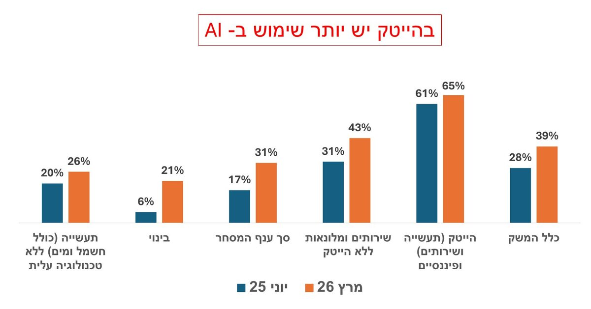
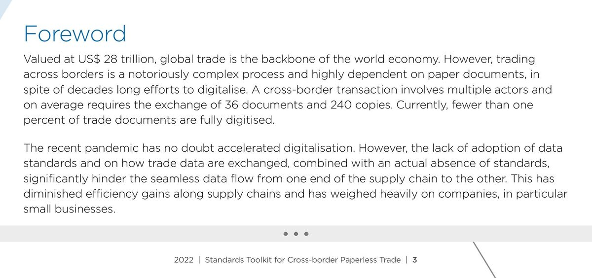
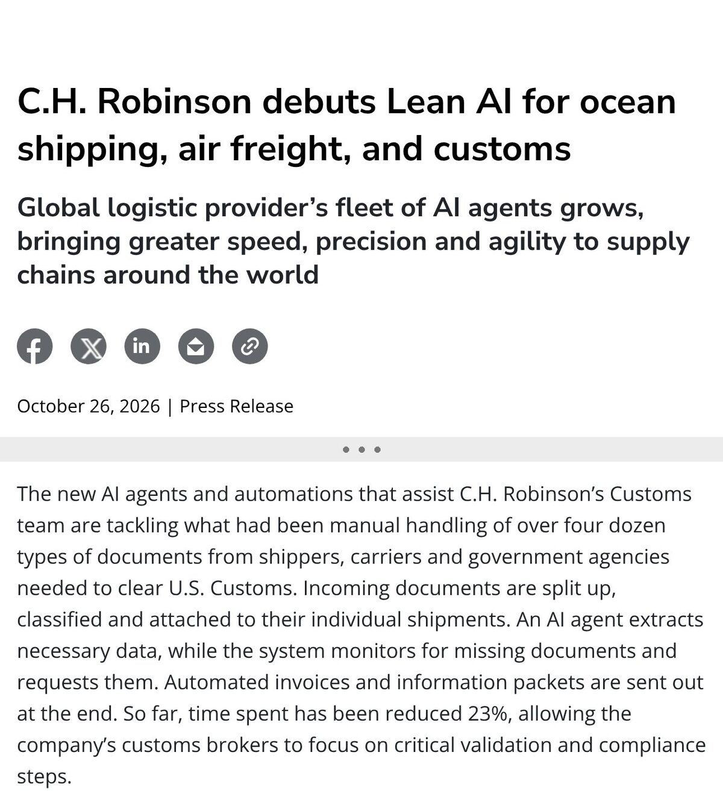
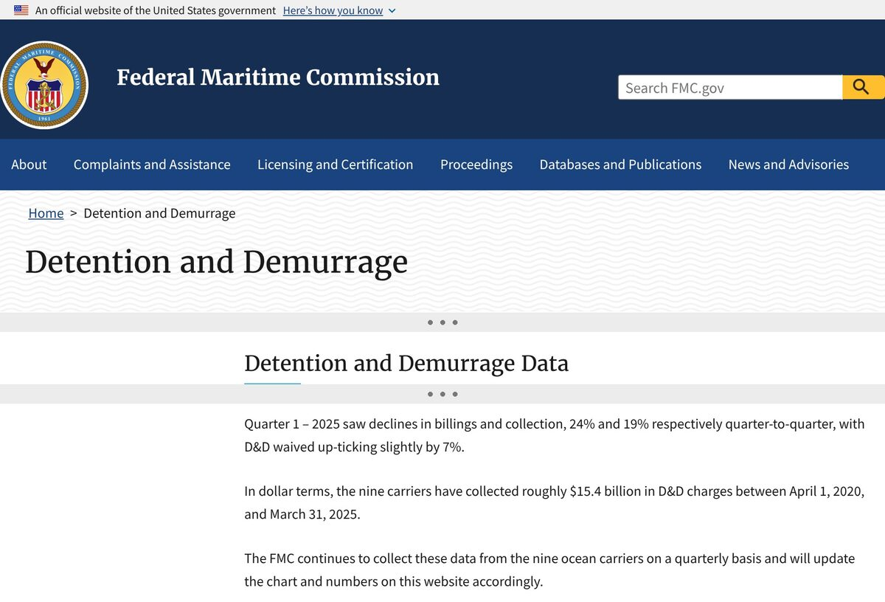
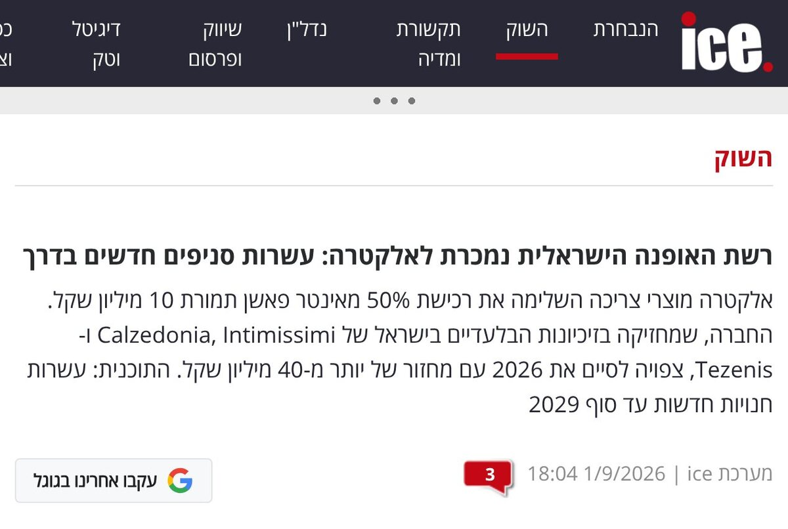

סימוןנתון יש מקורמהשיחה שלנו דברים שאמרתהערכה שיקול דעת שלילברר שאלה אליך
השורה התחתונה
ענקיות השילוח כבר העבירו חלק מהניירת לסוכני AI. אצל היבואן הישראלי זה כמעט לא התחיל.
זו תוכנית ראשונה לעסק ששנינו יכולים לבנות: שירות שמקים ומפעיל סוכני AI אצל יבואנים ומפיצים. זה עסק של אינטגרציה, לא של טכנולוגיה: הכלים כבר קיימים, ואנחנו מחברים אותם לעסק ומפעילים אותם כשירות שמביא תוצאה מדידה. זה גם נייר העבודה שביקשת: מה שהבנתי על הענף, ולצידו השאלות שרק אתה יודע לענות עליהן.
הטכנולוגיה הבשילהמאז 2025 ה-AI כבר לא רק עונה על שאלות. הוא קורא מסמכים, מפעיל מערכות ומסיים לבד משימות של שעות.
הענף מתאים במיוחדאצל יבואן רוב עבודת המשרד היא מסמכים, מעקב ותיאום בין ספק, משלח, עמיל מכס ולקוח. הרווח דק, ולכן כל שעה וכל טעות שנחסכות מורגשות.
השילוב בינינואתה מביא את הענף, הניסיון והאנשים. אני מביא את ההיכרות עם הכלים ואת היכולת להטמיע אותם. מתחילים בחודש הקרוב, בעסק אחד. הכיוון גדול בהרבה, ועליו פרק 9.
הסרט, 7 דקות.הזמנה אחת שמתעכבת בשתיים בלילה, ומה משתנה כשמישהו ער. קריינות באנגלית, כתוביות בעברית. אותה הזמנה מלווה גם את פרק 3 ואת פרק 5.
מה אני מבקש ממך
לתקן אותי. פרק 3 מתאר את מסע הסחורה כפי שהבנתי אותו מבחוץ, מקריאה ומהשיחה שלנו. בכל מקום שהמציאות שונה, אני רוצה לדעת.
לענות על השאלות. בכל פרק יש שאלות שמסומנות לברר. כולן מרוכזות בפרק 11, ואפשר לענות עליהן ישר בדף: בכתב, או בשיחה עם מראיין קטן שבניתי לשם כך.
לבחור איתי משלוח אמיתי אחד ולשחזר אותו יחד, מההזמנה ועד המחסן. כך נדע איפה באמת הולכים הזמן והכסף.
איך לקרוא
כל פרק נפתח בעיקר שלו. מי שרוצה להעמיק פותח את הכפתורים שמסומנים בפלוס. קריאה של פתיחות הפרקים ושל הסיכום שבפרק 11 אורכת כעשר דקות. קריאה רצופה של הדף אורכת כשעה, ועם כל ההרחבות כשעה וחצי.
ליד כל מספר יש קישור למקור. קטעים בתוך מסגרת מקווקוות נלקחו מהמקור עצמו, כתמונה או כציטוט מילה במילה. הסימן ° ליד קישור אומר שאת העמוד עצמו לא קראתי. מה שלא מבוסס על מקור מסומן כהערכה שלי, ומה שרק אתה יכול לאשר מסומן כשאלה.
פרק 1 · התמונה הגדולה
מה השתנה: מצ׳אט שעונה, לעובד שעושה
רוב האנשים מכירים את הבינה המלאכותית כצ׳אט חינמי שעונה על שאלות. בשנתיים האחרונות היא התחילה גם לעשות: מחברים אותה למייל, למסמכים ולמערכת הניהול של העסק, נותנים לה נוהל עבודה, והיא מבצעת משימות שלמות. הטכנולוגיה מתקדמת בחודשים והעסקים מתקדמים בשנים. הפער שביניהם הוא ההזדמנות.
מה שרוב האנשים מכירים
צ׳אט
שואלים שאלה ומקבלים תשובה.
יודע רק מה שכתבו לו בשיחה.
לא נוגע במערכות של העסק.
עובד רק כשמישהו יושב מולו.
אם טעה, הטעות נשארת על המסך.
מה שכבר קיים
סוכן
מקבל משימה ונוהל, ומבצע אותה עד הסוף.
קורא את המיילים, המסמכים והנתונים של העסק.
מפעיל כלים: שולח מייל, פותח קובץ, מעדכן הזמנה במערכת.
עובד גם בשתיים בלילה, ועל מאה משימות במקביל.
בודק את עצמו מול המסמכים, ומעביר לאדם את מה שחריג.
סוכן AI, במשפט אחד
סוכן הוא מודל שפה שחיברו לו ידיים. המודל הוא המוח: הוא קורא, מבין ומנסח. הכלים הם הידיים: גישה למייל, למסמכים ולמערכת הניהול. הנוהל הוא ההכשרה: מה עושים, באיזה סדר, ומתי עוצרים ושואלים אדם.
פרק 5 מסביר איך זה בנוי, בלי מונחים טכניים.
“AI agents advanced from answering questions to completing tasks in 2025 … they still fail roughly one in three attempts on structured benchmarks.”
ב-2025 סוכני AI עברו ממענה על שאלות לביצוע משימות. הם עדיין נכשלים בערך בניסיון אחד מכל שלושה במבחנים מובנים.
×180גדל אורך המשימה שסוכן מסיים לבד: מכ-4 דקות במרץ 2023 לכ-12 שעות בפברואר 2026. האורך מוכפל בערך כל ארבעה חודשים. נתוןMETR, עמוד המדידות
×13זול יותר בכל שנה: המחיר של רמת ביצועים נתונה, מאז 2023. נתוןEpoch AI, 2026
85%מהמשימות המקצועיות שבהן תוצר המודל השתווה לעבודת איש מקצוע או עלה עליה, באפריל 2026. בקיץ 2025: 39%. נתוןOpenAI, מבחן GDPval
66%הצלחה במשימות מחשב אמיתיות, לעומת כ-12% ב-2024. סטודנטים למדעי המחשב מצליחים בכ-72%. נתוןStanford AI Index 2026
ועדיין צריך לומר ביושר: במבחן של 240 פרויקטים אמיתיים של פרילנסרים, הסוכן הטוב ביותר השלים ברמה מקצועית 21% מהם באוקטובר 2026, לעומת 2.5% שנה קודם (Remote Labor Index). ארבעה מכל חמישה עוד נכשלים. סוכן מצליח כשהמשימה מוגדרת, הנוהל ברור, ויש מי שבודק את החריגים. להגדיר, לחבר ולפקח: זו העבודה שאנחנו מוכרים.
איך מודדים את זה, ומה המגבלות ארבעה מדדים, ומה כל אחד מהם לא אומר
אורך משימה (METR). מכון מחקר עצמאי בודק מה אורך המשימה, בזמן עבודה של אדם, שסוכן משלים לבד בהצלחה של 50%. ל-GPT-4 ממרץ 2023 נמדדו כ-4 דקות. למודל המוביל בפברואר 2026 נמדדו כ-12 שעות, בטווח הערכה רחב של 5 עד 61 שעות (METR, עמוד המדידות). המכון עצמו כותב שהמבחן לא מודד באופן אמין מעל 16 שעות (METR, מאי 2026). המשימות הן בתוכנה ובמחקר, לא בניירת של יבואן. היחס של פי 180 הוא חישוב שלי מהנתונים שבעמוד.
מחיר (Epoch AI ו-Stanford). המחיר של רמת ביצועים נתונה יורד בכ-47% בכל רבעון, לפי חמישה מבחנים במתמטיקה, במדעים ובמשחקים (Epoch AI, 2026). מודל ברמה של GPT-3.5 עלה 20 דולר למיליון יחידות טקסט בנובמבר 2022 ו-7 סנט באוקטובר 2024, ירידה של יותר מפי 280 (Stanford AI Index 2025).
עבודה מקצועית (GDPval). מבחן של OpenAI עצמה: משימות ידע מ-44 מקצועות, שנכתבו בידי אנשי מקצוע ותיקים ונשפטו בעיוורון מול עבודה אנושית. המשימות מוגדרות היטב, ובעולם האמיתי הן לא תמיד כאלה (OpenAI, מבחן GDPval).
הפעלת מחשב (OSWorld). משימות אמיתיות בתוכנות רגילות. העלייה מכ-12% ל-66.3% נמשכה כשנה וחצי עד שנתיים, לא שנה אחת (Stanford AI Index 2026).
“The post-2023 doubling-time is 131 days under TH1.1, compared to 165 days under TH1.”
זמן ההכפלה מאז 2023 הוא 131 יום בשיטת המדידה המעודכנת, לעומת 165 יום בשיטה הקודמת.
נתון במסחר בישראל השימוש ב-AI כמעט הוכפל בתשעה חודשים, מ-17% ל-31%, ועדיין שני עסקים מכל שלושה לא משתמשים בו בכלל (הלמ״ס, מרץ 2026). האנשים אימצו את הצ׳אט, והעבודה עצמה כמעט לא השתנתה.
המספרים: ארה״ב, ישראל, וסוכנים בפועל שלושה סקרים, וקטע מדוח של OpenAI
נתון בארה״ב 61.8% מבני 18 עד 64 כבר השתמשו ב-AI גנרטיבי, אבל הוא היה בשימוש רק ב-6.3% משעות העבודה (מאי 2026, GenAI Adoption Tracker, מאי 2026). האנשים אימצו את הצ׳אט. העבודה עצמה כמעט לא השתנתה.
נתון בישראל, 39% מהעסקים עם 10 משרות שכיר ומעלה דיווחו במרץ 2026 שהם משתמשים ב-AI, לעומת 28% ביוני 2025 (הלמ״ס, מרץ 2026). במסחר השיעור כמעט הוכפל בתשעה חודשים, מ-17% ל-31%, ועדיין שני עסקים מכל שלושה לא משתמשים בכלל. וגם ״שימוש״ הוא מושג רחב: לפי אותה מצגת, 18% מעסקי המסחר משלמים על כלי AI, ו-13% משתמשים בכלים חינמיים.
נתון וסוכנים שעושים עבודה? בסקר של McKinsey מ-2025, הטמעה של סוכנים הייתה בשיעור חד-ספרתי כמעט בכל תחום בעסק (Stanford AI Index 2026, פרק הכלכלה). בחברות ענק 40% כבר מרחיבים שימוש בסוכנים. בחברות קטנות מהן השיעור עומד במקום, על 22% (McKinsey, אוגוסט 2026).
“The primary constraints for organizations are no longer model performance or tooling, but rather organizational readiness.”
המגבלה העיקרית של ארגונים כבר איננה ביצועי המודלים או הכלים, אלא המוכנות של הארגון עצמו.
OPENAI, דוח מצב ה-AI בארגונים · דצמבר 2025 · פרסום של ספקית AIלמקור

השקף עצמו, מתוך מצגת הלמ״ס. המסחר, העמודות השלישיות משמאל: 17% ביוני 2025, 31% במרץ 2026. הסקר נערך בקרב 36,551 עסקים (וואלה כסף, 4.6.2026).
ארבע סיבות: מכירים רק את הצ׳אט, אין מי שיחבר אותו לעסק, כלי בלי ליווי לא מביא תוצאה, והערך מגיע רק כשמשנים את דרך העבודה.
ארבע הסיבות, עם המספרים סקרים מישראל ומאירופה, ניסוי בקניה, ולקח מהחשמל
מכירים רק את הצ׳אט
נתון 71% מהעסקים בישראל שלא תכננו להשתמש ב-AI אמרו שהוא פשוט לא רלוונטי לפעילות שלהם (המכון הישראלי לדמוקרטיה, 2025). מי שמכיר רק צ׳אט שעונה על שאלות לא רואה מה הוא יעשה במחלקת היבוא.
אין מי שיחבר
נתון באיחוד האירופי, כ-7 מכל 10 עסקים ששקלו AI ולא אימצו אותו הצביעו על חוסר מומחיות, החסם הנפוץ ביותר (Eurostat, חסמים). גם בישראל החסם הבולט הוא חוסר ידע (המכון הישראלי לדמוקרטיה, 2025).
כלי בלי ליווי לא מביא תוצאה
נתון בניסוי עם 640 בעלי עסקים קטנים בקניה, עוזר AI בוואטסאפ לא שיפר בממוצע הכנסות או רווחים, ואצל החלשים התוצאות ירדו בכ-10% (ניסוי בקניה, 2026). לפי דוח של MIT, 95% מהארגונים לא ראו תשואה מדידה, ופרויקטים עם שותף חיצוני הגיעו לשימוש בפועל בשיעור כפול מפיתוח פנימי: 67% מול 33% (MIT, 2025).
הערך מגיע כשמשנים את דרך העבודה
נתון ב-1899 פחות מ-5% מכוח המכונות במפעלים בארה״ב היה חשמלי. ההשפעה על הפריון הגיעה רק בשנות ה-20, כארבעה עשורים אחרי תחנת הכוח הראשונה, כשתכננו את המפעלים מחדש סביב החשמל (Paul David, 1990). מי שרק מחליף מנוע במנוע לא מרוויח.
מי מרוויח ממהפכה כזאת
לא רק מי שהמציא את הטכנולוגיה. בגל המחשוב צמח לצד התוכנה שוק גדול ממנה: האנשים שהכניסו אותה לעסקים.
נתון השותפים של SAP מכניסים עד היום 8.81 דולר על כל דולר שהחברה עצמה מכניסה (IDC, 2023).
ועוד שתי ראיות תחזית של Gartner, ומחקר על עלות ההתקנה של SAP
נתון ב-2026 העולם יוציא על שירותי IT כ-1.57 טריליון דולר, יותר מאשר על התוכנה עצמה, 1.47 טריליון (Gartner, יולי 2026, תחזית).
“…less than 20 percent of the typical $20 million installation cost of a SAP R/3 system … is for hardware and software … by far the greater part of the investment is for hiring consultants to help develop requirements; evaluate, select, and customize the software; redesign organizational processes; and train the staff in the use of the new system.”
פחות מ-20% מעלות ההתקנה הטיפוסית של מערכת SAP, כ-20 מיליון דולר, הלכו לחומרה ולתוכנה. רוב ההשקעה הלכה ליועצים שהגדירו דרישות, התאימו את התוכנה, תכננו מחדש את התהליכים והדריכו את העובדים.
שלושה דברים מתקיימים עכשיו יחד. הטכנולוגיה נעשתה מסוגלת לעבודה אמיתית רק ב-2025. רוב העסקים עוד לא התחילו. ומעט מאוד אנשים יודעים לחבר בין השניים. בעוד שנתיים או שלוש ההיכרות עם הכלים תהיה נפוצה. מה שיישאר למי שנכנס מוקדם הוא הלקוחות, האמון והשיטה שהשתפרה מפרויקט לפרויקט.
מי שרוצה את המחקר המלא על הפער, עם 39 מקורות: האתר ״הפער הגדול״, שליווה את הסרטון הראשון.
פרק 2 · הבחירה
למה דווקא יבוא וסחר
סוכן טוב בעבודה שכולה מידע שעובר מיד ליד: לקרוא מסמך, להשוות אותו למסמך אחר, לעדכן מערכת, לשלוח תזכורת. אצל יבואן זו רוב עבודת המשרד. ובענף שבו נשארים בשורה התחתונה כחמישה אחוזים, כל שקל שנחסך שווה לרווח על עשרים שקלים של מכירות.
סיבה 1
העבודה היא מידע שעובר מיד ליד
במשלוח יבוא אחד מעורבים ספק, מפעל, משלח, חברת ספנות, נמל, עמיל מכס, מכון התקנים, בנק, מבטח, מחסן ולקוח. כל אחד מהם מבקש מסמך, וכל אחד שולח מסמך. הסחורה זזה פעם אחת. המידע עליה זז מאות פעמים.
הספירה המלאה 36 מסמכים, משלוח אבוקדו אחד, ולמה מודל שפה יודע לקרוא את זה
נתון לשכת המסחר הבינלאומית וארגון הסחר העולמי סופרים בעסקת סחר ממוצעת 36 מסמכים ו-240 עותקים (ICC ו-WTO, 2022). Maersk עקבה אחרי משלוח אחד של אבוקדו ממומבסה לרוטרדם ומצאה כ-30 גופים, כ-100 אנשים וכ-200 חילופי מידע (Maersk, דרך Seatrade Maritime).
נתון פחות מאחוז אחד ממסמכי הסחר בעולם דיגיטליים לגמרי. השאר הם קובצי PDF, סריקות ומיילים. זה בדיוק החומר שמודל שפה יודע לקרוא, ושתוכנה רגילה לא ידעה.

״עסקה חוצת גבולות מערבת גורמים רבים, ודורשת בממוצע החלפה של 36 מסמכים ו-240 עותקים. כיום פחות מאחוז אחד ממסמכי הסחר דיגיטליים לגמרי.״
ICC ו-WTO · ערכת התקנים לסחר ללא נייר · 2022 · עמוד 3למקור
סיבה 2
הרווח דק, ולכן כל שקל שנחסך נשאר
מהשיחה שלנו כלל האצבע ששמעתי ממך: כדי להרוויח מיליון צריך למכור בערך עשרים מיליון.
הערכה המשמעות: חיסכון של 50,000 שקל בשנה בעבודת המשרד שווה לרווח על מיליון שקל של מכירות נוספות. ובשבילו לא צריך לקנות סחורה, לממן מלאי או למצוא לקוח.
הנתונים מארה״ב כמה נשאר למפיצים, לחברות הלבשה ולחברות תוכנה
נתון הנתונים על חברות ציבוריות בארה״ב מראים תמונה דומה. למפיצים ולסיטונאים נשארים 6.05% מההכנסות, ולחברות הלבשה 3.85%. לחברות תוכנה נשארים 25.49% (Damodaran, NYU Stern, 2026).
הנתונים הם של חברות ציבוריות גדולות בארה״ב. אצל יבואן ישראלי פרטי המספרים שונים, וזו אחת השאלות אליך בפרק 11.
כמה נשאר מכל 100 שקל של מכירותרווח נקי כאחוז מההכנסות. חברות ציבוריות בארה״ב, ינואר 2026.
תוכנה25.5%309 חברות. רווח גולמי 71.7%.
כלל השוק9.7%5,994 חברות.
הפצה וסיטונאות6.1%62 חברות. רווח גולמי 30.6%.
קמעונאות כללית5.6%23 חברות. רווח גולמי 33.2%.
הלבשה3.9%רווח גולמי 56.9%. הפער בין הגולמי לנקי הוא חנויות, אנשים ושיווק.
לא כל עבודת משרד מתאימה לסוכן. הניירת של יבואן מתאימה בגלל שלוש תכונות:
היא כתובה. מיילים, חשבונות, רשימות אריזה, שטרי מטען, הודעות וואטסאפ.
יש לה כללים. תנאי המכר, נוהלי המכס, ומה שנהוג בחברה: מה עושים כשספק מאחר, ומי מאשר חריגה.
אפשר לבדוק אותה. החשבון מול ההזמנה, רשימת האריזה מול החשבון, שטר המטען מול שניהם. טעות מתגלה כאי-התאמה בין שני מסמכים.
זה כבר קורה אצל הגדולים שלוש דוגמאות, עם מספרים
נתון וזה כבר קורה אצל הגדולים. C.H. Robinson, מהמשלחים הגדולים בעולם, דיווחה באוקטובר 2026 שסוכנים מטפלים אצלה ביותר מ-48 סוגי מסמכים לשחרור מהמכס בארה״ב, ושהזמן שהצוות משקיע בניירת הזאת ירד עד כה ב-23% (C.H. Robinson, אוקטובר 2026). אצל מפיץ תעשייתי גדול זמן הכנת מסמכי המשלוח ירד ב-60% (McKinsey, מרץ 2024). אצל AmerCareRoyal, מפיצה אמריקאית, הקלדת הזמנה ירדה מ-8 דקות לפחות מדקה (MACH Alliance, מקרה ACR°, תיאור מקרה של ספק הטכנולוגיה).

״המסמכים הנכנסים מפוצלים, מסווגים ומשויכים למשלוח שלהם. סוכן AI מחלץ את הנתונים הדרושים, והמערכת עוקבת אחרי מסמכים חסרים ומבקשת אותם. עד כה ירד הזמן המושקע ב-23%, וכך עמילי המכס של החברה מתפנים לשלבי האימות והציות.״
C.H. ROBINSON · הודעה לעיתונות · 26.10.2026 · נתון של החברה עצמהלמקור
ועוד ארבע סיבות
המערכות כבר קיימות, והאנשים הם הדבק שביניהן. הענף כמעט לא התחיל. יש הרבה עסקים דומים. ואפשר לגדול בלי להגדיל את המשרד.
ארבע הסיבות, עם המספרים Priority, סקרים מארה״ב, נתוני הלמ״ס, וקטע על כוח האדם
4. המערכות כבר קיימות, והאנשים הם הדבק
ליבואן יש מערכת ניהול, בדרך כלל Priority (יותר מ-17,000 לקוחות). למשלח יש פורטל. למכס יש את ״שער עולמי״. ביניהם עובדים אנשים שמעתיקים ממקום למקום, באקסל, במייל ובוואטסאפ. הערכה סוכן לא מחליף אף מערכת. הוא עושה את ההעתקה, הבדיקה והתזכורת שביניהן, ולכן אפשר להתחיל בלי פרויקט מחשוב.
5. הענף כמעט לא התחיל
נתון בסקר של 426 מנהלי הפצה בארה״ב, 73% ציפו שתמחור בעזרת AI ישפר את הרווחיות ב-2% ומעלה, ורק 16% השיגו זאת. בלוגיסטיקה: 49% מול 12% (MDM ו-NAW, 2026, סקר בחסות ספקים). נתון BCG מצאה תמונה דומה אצל חברות לוגיסטיקה (BCG, אוגוסט 2026). הערכה לא מצאתי אף מקרה מתועד של יבואן ישראלי שמפעיל סוכנים. אני קורא את זה כסימן שעוד אין מי שמציע, ואתה תדע לומר אם אני טועה.
6. יש הרבה עסקים דומים
נתון בישראל 27,305 עסקי סיטונאות. מתוכם 3,442 מעסיקים 10 עד 100 שכירים, 135 מעסיקים 101 עד 200, ו-59 מעסיקים יותר (הלמ״ס, 2023, 2023). יותר מ-70% מהצריכה הפרטית של מוצרי תעשייה בישראל מגיעה מיבוא (בנק לאומי, 2024). הלמ״ס לא סופרת יבואנים בנפרד, ולכן זה סדר גודל ולא ספירה. הערכה מה שנבנה ליבואן אחד משרת, עם התאמות, גם את הבא אחריו.
7. לגדול בלי להגדיל את המשרד
נתון בסקר הלמ״ס, מבין העסקים שמשתמשים ב-AI רק 9% (במונחי מועסקים) דיווחו שהוא השפיע על מספר העובדים, ובענף המסחר לא דווחה השפעה כזאת (המכון הישראלי לדמוקרטיה, 2025). אצל מפיצים בארה״ב, 76.3% לא שינו את כוח האדם (NAW ו-MDM, 2026). הערכה מה שהיבואן קונה הוא קיבולת: עוד הזמנות, עוד מותג ועוד ערוץ מכירה עם אותו צוות, כשהאנשים הטובים עסוקים בספקים ובלקוחות ולא בהקלדה.
״בקצה אחד נמצא ענף המסחר שמעיד על היעדר השפעה על מצבת כוח האדם, בעוד שבהיי-טק כ-10% (במונחי מועסקים) דיווחו על השפעה מצמצמת בתעסוקה.״
המכון הישראלי לדמוקרטיה, על סקר הלמ״ס · יולי 2025למקור
ומה מדבר נגד הבחירה הזאת שלוש הסתייגויות, והפניה לתשובות
רווח דק הוא גם תקציב דק. מי שמרוויח חמישה אחוזים בודק כל הוצאה חדשה בחשדנות, ובצדק. לכן ההצעה שלנו צריכה להיות תוצאה אחת שאפשר לספור, ולא ״פרויקט AI״.
הענף שמרן, והנתונים מפוזרים. חלק מהמידע נמצא בראש של אנשים ותיקים, בקבוצות וואטסאפ ובטלפונים פרטיים. סוכן יכול לעבוד רק עם מה שנגיש לו.
הגדולים מוסיפים AI בעצמם. Priority הוסיפה סוכנים למערכת, והמשלחים הגדולים בונים סוכנים משלהם. צריך לדעת איפה אנחנו מוסיפים ואיפה נהיה מיותרים.
פרק 10 עונה על כל אחת מההסתייגויות, ועל שמונה נוספות.
פרק 3 · התהליך
מסע הסחורה, מהיריד ועד הלקוח
תשע תחנות. בכל אחת: מה קורה בה, איפה הולכים זמן וכסף, ומה סוכן יכול לעשות שם. כתבתי את זה מבחוץ, מקריאה ומהשיחה שלנו, ואתה מכיר את זה מבפנים. בכל תחנה יש שאלה אליך, ובכל מקום שטעיתי אני מבקש שתתקן.
הזמנה אחת מלווה את המסעזו ההזמנה מהסרט: הזמנה 4417, 2,400 זוגות מגפי צ׳לסי ממפעל בסין, 1,500 שחורים ו-900 חומים. בכל תחנה מופיע מה שקרה לה שם. היא דוגמה להמחשה, והמספרים בה אינם של חברה אמיתית.
תחנה 1
בוחרים מה להביא: ירידים, מותגים והתאמה לישראל
כאן נקבע רוב הרווח של העונה. טעות בבחירה לא מתוקנת בהמשך הדרך. היא נמכרת בסוף העונה בהנחה.
מה קורה כאן
נוסעים לירידים. נתון ביריד קנטון האחרון, שננעל ב-4.11.2026, נספרו 352,000 קונים מחוץ לסין (People's Daily, נובמבר 2026°). מהשיחה שלנו בספורט ובאופנה: ISPO במינכן, והיריד החצי-שנתי באטלנטה.
בוחרים דגמים, צבעים ומידות שמתאימים לקהל ולאקלים בארץ.
נתון באופנה מזמינים שישה עד תשעה חודשים לפני העונה (SPS Commerce°).
איפה הולכים זמן וכסף
נתוני המכירות של השנה שעברה נמצאים במערכת, ולא ביד של הקניין כשהוא עומד בביתן.
מחירונים וקטלוגים מגיעים כקובצי PDF ותמונות. ההשוואה ביניהם נעשית בראש או באקסל, בערב במלון.
אחרי היריד: עשרות מיילים על דוגמאות, הצעות מחיר ותיקונים.
נתון רשת אופנה טיפוסית מוותרת בהנחות על 20% עד 50% מהמכירות (Bain). חלק מזה מתחיל כאן, בבחירה ובכמות.
מה סוכן יכול לעשות
לפני היריד: דף לכל ספק. מה נמכר ממנו, באילו מידות וצבעים, מה נשאר במלאי ומה היה הרווח.
במהלך היריד: להפוך באותו ערב תמונות ומחירונים לטבלה אחת שאפשר להשוות.
אחרי היריד: לרדוף אחרי דוגמאות והצעות מחיר, ולסכם מה סוכם עם מי.
הערכה הוא לא בוחר את הסחורה. הטעם, ההיכרות עם השוק והקשר עם הספק נשארים של הקניין.
מי כבר עושה את זה סוכן הרכש של עליבאבא
נתון הכיוון כבר קיים בעולם: Accio, סוכן הרכש של עליבאבא, דיווח במרץ 2026 על יותר מ-10 מיליון משתמשים בחודש. גם שם הקונה מאשר כל עסקה בעצמו (Digital Commerce 360, יולי 2026°).
הזמנה 4417 בתחנה הזאת · דוגמה להמחשההדגם נבחר בתחילת השנה, אחרי סבב הירידים: מגף צ׳לסי, דגם 2206, בשחור ובחום, לחורף הבא.
שאלה אליךאיך באמת מחליטים מה להזמין וכמה? כמה מההחלטה היא מספרים וכמה תחושת בטן, ומה היית רוצה שיהיה לך ביד כשאתה עומד מול ספק?
תחנה 2
משיגים את הזכות למכור: זיכיון, הפצה בלעדית או ייצור ברישיון
מותג הוא נכס של מישהו אחר. היבואן משיג את הזכות למכור אותו בארץ, ומשלם עליה בהתחייבויות.
מה קורה כאן
מהשיחה שלנו זיכיון הוא בלעדיות מהיצרן למדינה, ומשיגים אותו בדרך כלל בירידים.
שלושה מסלולים: לקנות מהקולקציה של המותג, להפיץ אותו בבלעדיות, או לייצר בעצמך תחת השם שלו ולשלם תמלוג.
נתון התמלוג הממוצע היה 8.4% בהלבשה ו-7.0% בהנעלה, לפי נתוני 2015 (The Licensing Letter, 2016°). לרוב יש גם סכום מינימום שמשלמים בכל מקרה.
איפה הולכים זמן וכסף
ההסכם מלא התחייבויות עם תאריכים: רכש מינימלי, תקציב שיווק, דוחות מכירה, ואישור מראש לכל מוצר ולכל פרסום.
נתון הדוחות למותגים נבנים ביד. במודעת דרושים של פקטורי 54, שמייבאת יותר מ-150 מותגים, התפקיד כולל דוחות שבועיים למותגים, הזנת נתונים למערכת ו״עבודה מרובה עם Excel״ (מודעת דרושים, פקטורי 54).
חישוב התמלוגים בסוף כל תקופה, והמחלוקות עליו.
מי שמפספס התחייבות מסכן את המותג כולו.
מה סוכן יכול לעשות
לקרוא את ההסכמים ולהפוך אותם ללוח התחייבויות עם תזכורות.
להפיק את הדוחות התקופתיים למותג מתוך נתוני המכירות.
לחשב תמלוגים, ולהשוות אותם לחשבון שהמותג שולח.
להתריע חודשיים מראש כשרכש המינימום לא עומד להתמלא.
כמה גדול שוק הרישיונות מספר אחד, עם מקור
נתון מוצרים ברישיון הם שוק של 389.8 מיליארד דולר בשנה, וההלבשה היא הקטגוריה הגדולה בו (Licensing International, 2026°).
הזמנה 4417 בתחנה הזאת · דוגמה להמחשההמגף מיוצר בסין תחת מותג שהיבואן מחזיק ברישיון. המותג אישר את הדגם לפני הייצור, ועל כל זוג שיימכר ישולם לו תמלוג.
שאלה אליךמה מותג דורש מהיבואן באופן שוטף: דוחות, מינימום, אישורים? כמה עבודה זו בפועל, ומה קורה כשמפספסים?
תחנה 3
מזמינים, ועובדים מול הספק עד שהסחורה מוכנה
מהרגע שההזמנה יוצאת ועד שהסחורה ארוזה עוברים חודשים. רוב העבודה בהם היא מעקב.
מה קורה כאן
יוצאת הזמנת רכש. הספק מחזיר חשבון פרופורמה, משלמים מקדמה, ונקבע תאריך מוכנות.
נתון מפעלי הלבשה בסין דורשים בדרך כלל מינימום של 500 עד 5,000 יחידות לדגם ולצבע (Shanghai Garment°).
שינויים בדרך: כמויות, צבעים, מחיר חומר הגלם ותאריכים.
איפה הולכים זמן וכסף
נתון ההזמנה מוקלדת למערכת ביד, והמעקב נעשה במיילים. במודעת דרושים של קסטרו לקניינית אופנה: ״הקלדת הזמנות רכש ומעקב אספקה״ (מודעת דרושים, קסטרו).
אישור הספק שונה מההזמנה בשורה או שתיים, ואף אחד לא משווה שורה מול שורה.
הספק עונה בלילה, לפי השעון של סין. התשובה מחכה לבוקר, ולפעמים ליום ראשון.
עיכוב מתגלה מאוחר, כשכבר אין הרבה מה לעשות.
מה סוכן יכול לעשות
להשוות את הפרופורמה להזמנה שורה מול שורה, ולהציף כל הבדל.
לנהל לוח מעקב לכל הזמנה פתוחה, ולשאול את הספק על ההתקדמות בשעות שלו ובשפה שלו.
להתריע על עיכוב ביום שבו נודע עליו, יחד עם מה שהוא משפיע: אילו לקוחות ואיזה מבצע.
לזכור. הספק שאמר ״שבוע״ ארבע פעמים השנה, ושלוש פעמים זה היה שבועיים.
הזמנה 4417 בתחנה הזאת · דוגמה להמחשהיוצאת הזמנה 4417: 2,400 זוגות, 1,500 שחורים ו-900 חומים. המפעל מאשר שהסחורה תהיה מוכנה ב-12.11.
שאלה אליךמי עוקב אצל יבואן אחרי הזמנה פתוחה, וכל כמה זמן? באיזה שלב מגלים בדרך כלל עיכוב, ומה עוד אפשר לעשות אז?
תחנה 4
ייצור, בקרת איכות, והמסמכים שיוצאים עם הסחורה
הסחורה והניירת שלה נולדות יחד. מסמך שגוי שיוצא מהמפעל הופך לעיכוב בנמל, שבועות אחר כך.
מה קורה כאן
המפעל מייצר, וחברת בדיקות בודקת לפני המשלוח. נתון ב-2025 עברו בסין 89% מהבדיקות של Bureau Veritas. בערך אחת מכל תשע נכשלה (Bureau Veritas, 2025°).
הספק מכין את המסמכים: חשבון חתום, מפרט אריזות, תעודת מקור, ותעודות בדיקה למוצר שיש עליו תקן.
נתון לפי החוק בישראל, על המוצר צריכים להופיע שם היבואן, מענו וארץ הייצור, והאחריות לכך על היבואן (לשכת המסחר, 2024).
איפה הולכים זמן וכסף
נתון מסמכים מגיעים מאוחר או עם טעויות, ומישהו צריך לרדוף אחריהם. במודעה של קסטרו לקניין רכש: ״מעקב אחר קבלת מסמכים בזמן מהספקים והעברתם למחלקת יבוא״ (מודעת דרושים, קסטרו).
דוח הבדיקה מגיע כקובץ ארוך, ולא תמיד מישהו קורא אותו עד הסוף לפני שהסחורה יוצאת.
תווית שנשכחה במפעל מודבקת בארץ, ביד, במחיר של שעות עבודה במחסן.
מה סוכן יכול לעשות
רשימת מסמכים לכל משלוח, לפי סוג המוצר: מה נדרש, מי חייב אותו, ועד מתי.
לקרוא כל מסמך כשהוא מגיע, להשוות להזמנה, ולבקש תיקון לפני שהסחורה עולה על האונייה.
לקרוא את דוח הבדיקה ולסכם בשלוש שורות מה נמצא ומה דורש החלטה.
לוודא עם המפעל, לפני האריזה, שהתווית בעברית מוכנה ונכונה.
הזמנה 4417 בתחנה הזאת · דוגמה להמחשהב-02:14 בלילה כותב המפעל: העור החום הגיע באיחור, והסחורה תהיה מוכנה ב-19.11 ולא ב-12.11. כאן מתחיל הסרט.
שאלה אליךאילו מסמכים נוטים להגיע מאוחר או שגויים? ומה זה עלה בפעם האחרונה שזה קרה לך?
תחנה 5
מובילים: בים או באוויר
הבחירה בין ים לאוויר היא בחירה בין כסף לזמן. ברוב המקרים היא נעשית בלחץ, כשכבר יש עיכוב.
מה קורה כאן
המשלח מזמין מקום באונייה או במטוס, במכולה מלאה או במטען חלקי.
נתון משנגחאי לאשדוד: 18 עד 20 יום דרך תעלת סואץ, ו-30 עד 34 יום סביב אפריקה (יחדיו, משלח בינלאומי).
מבקשים הצעות מחיר, מבטחים, ועוקבים אחרי האונייה עד הנמל.
איפה הולכים זמן וכסף
נתון הצעת מחיר להובלה לוקחת ימים. בבדיקה של Freightos מ-2015, משלחים גדולים ענו אחרי 90 שעות בממוצע, ורק 45% שלחו הצעה (Freightos, דרך FreightWaves).
אף אחד לא משווה את חשבון המשלח להצעת המחיר, שורה מול שורה.
שיחות ״איפה המכולה״ בין הרכש, המשלח, המחסן והמכירות.
כשאונייה מאחרת, שומעים על כך מהמשלח, ומאוחר.
מה סוכן יכול לעשות
לבקש הצעות מכמה משלחים, ולהשוות אותן באותו מבנה.
לעקוב אחרי כל מכולה כל יום, לעדכן את תאריך ההגעה במערכת, ולהודיע למי שמושפע.
כשיש עיכוב: לחשב את האפשרויות ואת המחיר של כל אחת. לחכות, להטיס חלק, או לפצל.
לבדוק את חשבון ההובלה מול ההצעה לפני שמשלמים.
המשלחים עצמם כבר שם C.H. Robinson ו-Kuehne+Nagel
נתון המשלחים עצמם כבר שם. אצל C.H. Robinson, הצעת מחיר להובלה ימית שלקחה יומיים עד שלושה יוצאת היום בשתיים עד שלוש דקות (C.H. Robinson, אוקטובר 2026). Kuehne+Nagel, מהמשלחים הגדולים בעולם, הודיעה במרץ 2026 על ביטול של יותר מ-2,000 משרות, והנהלתה ייחסה את רובן להתייעלות טכנולוגית ולא לחולשה בביקוש (FreightWaves, 3.3.2026). הערכה יבואן שיושב מול משלח שעובד כך, ועדיין עוקב באקסל, נמצא בעמדת נחיתות.
הזמנה 4417 בתחנה הזאת · דוגמה להמחשההסוכן שואל את המפעל מה כבר ארוז, ומגלה שהשחורים מוכנים. עד 07:30 מחכות לבעלים שלוש אפשרויות: לחכות, להטיס את מה שהקמפיין צריך בכ-8 דולר לזוג, או לפצל את המשלוח בכ-450 דולר, כך שהשחורים יפליגו באונייה שכבר הוזמנה. ההמלצה: לפצל. האדם מחליט.
שאלה אליךכמה מהמשלוחים מתעכבים בפועל, ובכמה? מי מחליט בין ים לאוויר, ולפי מה?
תחנה 6
משחררים: מכס, תקינה, ומחסן ערובה
כאן הניירת פוגשת את המדינה. מסמך חסר עוצר מכולה, והמונה ממשיך לרוץ.
מה קורה כאן
עמיל המכס מגיש רשימון. נתון מצרפים חשבון ספק חתום, שטר מטען, מפרט אריזות, מסמך העדפה ורישיונות. המכס שולח כל רשימון לאחד משלושה תורים, משחרור אוטומטי ועד בדיקת מסמכים ובדיקה פיזית (נוהל השחרור של המכס).
נתון תקינה: מוצרים בקבוצות היבוא 2 ו-3 משתחררים מאז יולי 2024 לפי הצהרת יבואן, והיבואן שומר תיק מוצר (לשכת המסחר).
מהשיחה שלנו מחסן ערובה: הסחורה מחכה בו לפני תשלום המסים, ומשחררים ממנו בהדרגה לפי ההזמנות. כך המכס והמע״מ לא משולמים מראש, והכסף מהמכירות מממן את השחרור הבא.
איפה הולכים זמן וכסף
נתון מכולה שנשארת בנמל אחרי הימים החופשיים משלמת דמי השהיה ואחסנה על כל יום (DHL).
נתון ריבוי מסלולי התקינה בלבל גם עמילי מכס ויבואנים (מבקר המדינה, 2025).
סיווג שגוי: משלמים יותר מדי, או מסתכנים.
הערכה ההחלטה מה לשחרר ממחסן הערובה, ומתי, היא חשבון של הזמנות, מלאי ומזומן. היום היא נעשית בראש של מישהו מנוסה.
מה סוכן יכול לעשות
להכין לעמיל המכס תיק מלא ובדוק, לפני שהאונייה מגיעה. את הרשימון מגיש עמיל המכס המורשה ולא אנחנו, וכך זה נשאר.
לבדוק כל מסמך מול האחרים: כמויות, ערכים, תיאורים וארץ מקור.
להתריע כמה ימים לפני שהימים החופשיים נגמרים.
להציע תוכנית שחרור שבועית ממחסן הערובה: מה צריך לצאת לפי ההזמנות הפתוחות, וכמה מס זה יעלה השבוע.
כמה כסף זה, במספרים מארה״ב דמי השהיה בחמש שנים

״במונחים כספיים, תשע חברות הספנות גבו כ-15.4 מיליארד דולר בדמי השהיה בין 1 באפריל 2020 ל-31 במרץ 2025.״ זה נתון אמריקאי. לישראל לא מצאתי נתון דומה.
הזמנה 4417 בתחנה הזאת · דוגמה להמחשהכשהשחורים בים, הסוכן בודק שהחשבון, מפרט האריזות ושטר המטען מתאימים למשלוח המפוצל, ושולח לעמיל המכס תיק מלא כמה ימים לפני ההגעה.
שאלה אליךאיך מחליטים היום מה לשחרר ממחסן הערובה ומתי? מי עושה את החשבון, ובאיזה כלי?
תחנה 7
קולטים: מחסן, עלות נחיתה, ופריט שמוכן למכירה
סחורה שהגיעה למחסן עוד לא נמכרת. צריך לספור אותה, לדעת כמה היא עלתה באמת, ולפתוח אותה במערכת, בחנויות ובאתר.
מה קורה כאן
קליטה במחסן, וספירה מול מפרט האריזות. מהשיחה שלנו המחסנים עצמם כבר ממוחשבים.
חישוב עלות הנחיתה: ספק, הובלה, ביטוח, מסים ועמלות. ממנה נגזר המחיר.
פתיחת פריטים: ברקוד, תיאור, מידות, צבעים, מחיר, תמונות וטקסט לאתר.
איפה הולכים זמן וכסף
עלות הנחיתה מחושבת מאוחר ובקירוב, באקסל. מהשיחה שלנו בפועל מתמחרים בכלל אצבע: מכפילים את מחיר הקנייה, לפחות.
הערכה שער הדולר זז, והמחירון לא. עלייה של 3% בדולר על רכש של מיליון שקל בחודש היא 30,000 שקל שנשחקו מהמרווח.
פתיחת הפריטים לוקחת ימים, ובזמן הזה הסחורה במחסן ולא על המדף.
חוסרים ופגמים לא תמיד נתבעים מהספק.
מה סוכן יכול לעשות
לחשב עלות נחיתה לכל פריט ברגע שהחשבונות מגיעים, ולסמן פריטים שהמרווח שלהם ירד מתחת ליעד.
להכין את כרטיסי הפריטים מהנתונים של הספק: תיאור, מאפיינים, וטקסט בעברית לאתר.
להשוות את הספירה למפרט, ולפתוח תביעה מול הספק על מה שחסר.
באופנה זה כבר נמדד Zalando ו-G-Star
נתון באופנה זה כבר נמדד. Zalando דיווחה שתוכן המוצר שנוצר ב-AI עלה מכמעט אפס ל-90% בתוך שנה, ושהכנת קמפיין ירדה משישה שבועות לכמה ימים (FashionUnited, מרץ 2026). ב-G-Star פתיחת מוצר לאתר ירדה משבועות לימים (Grid Dynamics, מקרה G-Star). שני הנתונים הם דיווח של החברה או של הספק שלה.
הזמנה 4417 בתחנה הזאת · דוגמה להמחשההמכולה הראשונה מגיעה למחסן. עלות הנחיתה של זוג מחושבת מחדש: הפיצול הוסיף כ-19 סנט לזוג. המחירון נשאר כפי שהיה, והמרווח נשאר בתוך היעד.
שאלה אליךכמה ימים עוברים בממוצע מהגעת המכולה למחסן ועד שהסחורה על המדף ובאתר? מה מעכב?
תחנה 8
מוכרים: חנויות, אתר וסיטונות
אותה סחורה נמכרת בשלושה ערוצים, ולכל אחד מהם ניירת משלו.
מה קורה כאן
חנויות: חלוקה לסניפים, השלמות, העברות בין סניפים, מבצעים וסוף עונה.
הזמנות סיטונאיות מוקלדות למערכת ביד. הערכה 80 הזמנות ביום, חמש דקות להזמנה, הן כ-147 שעות עבודה בחודש.
טעות בהקלדה הופכת למשלוח שגוי, לזיכוי ולשיחה לא נעימה עם לקוח.
החלוקה לסניפים נעשית לפי תחושה, וסחורה תקועה בסניף אחד כשהיא חסרה באחר.
לקוח שמחכה יום לאישור הזמנה מזמין בינתיים ממישהו אחר.
מה סוכן יכול לעשות
לקרוא הזמנה מוואטסאפ, ממייל או מהודעה קולית, לפתוח אותה במערכת, ולהחזיר ללקוח אישור. מה שלא ברור עובר לאדם.
לשלוח לכל מנהל סניף דוח בוקר: מה נמכר, מה חסר, ומה כדאי להעביר.
להכין הצעה להשלמות ולחלוקה, שאדם מאשר.
כמה זמן זה חוסך שתי חברות, במספרים שלהן
נתון אצל AmerCareRoyal ירד הטיפול בהזמנה מ-8 דקות לפחות מדקה (MACH Alliance, מקרה ACR°). אצל C.H. Robinson הזמנה שמגיעה במייל נפתחת במערכת בכ-90 שניות, 5,500 הזמנות ביום (C.H. Robinson, 2025). אלה נתונים של החברות עצמן.
הזמנה 4417 בתחנה הזאת · דוגמה להמחשהשלושה לקוחות שהובטחו להם 1,150 זוגות מקבלים עדכון עוד באותו בוקר: מה מגיע בזמן, ומה שבוע אחר כך. הלקוח שפותח קמפיין חורף ב-17.12 מקבל את השחורים לפני הקמפיין.
שאלה אליךבאיזה ערוץ מגיעות היום ההזמנות הסיטונאיות, וכמה אנשים מקלידים אותן? איפה קורות הטעויות?
תחנה 9
סוגרים: שירות, החזרות, חשבונות וגבייה
אחרי שהסחורה נמכרה נשארת ניירת: לענות, להתאים, לשלם ולגבות.
מה קורה כאן
שירות: איפה ההזמנה, החלפות, החזרות ואחריות.
חשבונות: התאמת חשבון ספק להזמנה ולקבלה, תשלומים, והתאמות בנק.
נתון חשבונית מעל 10,000 שקל צריכה מספר הקצאה מרשות המסים מאז ינואר 2026, ומעל 5,000 שקל מאז יוני 2026 (רשות המסים).
גבייה מלקוחות סיטונאיים, בתנאי שוטף פלוס.
איפה הולכים זמן וכסף
נתון טיפול בחשבונית ספק עולה בממוצע 9.40 דולר ונמשך 9.2 ימים. אצל הטובים ביותר: 2.78 דולר (Ardent Partners, 2025).
נתון כ-11% מהתשלומים בין עסקים בישראל איחרו ברבעון השלישי של 2025 (דן אנד ברדסטריט, 2025).
הערכה עשרה ימי אשראי על מחזור של 30 מיליון שקל הם כ-820,000 שקל שתקועים אצל לקוחות.
שיחות סטטוס חוזרות, שמעסיקות את אנשי המכירות והשירות.
מה סוכן יכול לעשות
לענות ללקוח על מצב ההזמנה מתוך הנתונים במערכת, בכל שעה.
להתאים חשבון ספק להזמנה ולקבלה, ולהעביר לאדם רק את מה שלא מתאים.
להזכיר ללקוח לפני מועד התשלום, בנימוס, ולהעביר לאדם את מי שמאחר שוב ושוב.
להכין את הניירת של החזרה או של זיכוי.
הלקח של Klarna ומה אנחנו לוקחים ממנו
נתון Klarna דיווחה ב-2024 שעוזר AI מטפל בשני שלישים משיחות השירות שלה. שנה אחר כך אמר המנכ״ל שהדגש על חיסכון פגע באיכות, והחברה חזרה לגייס נציגים (Entrepreneur, מאי 2025°). הערכה המסקנה שלנו: סוכן לשאלות החוזרות, ואדם לכל מה שדורש שיקול דעת או יחס.
הזמנה 4417 בתחנה הזאת · דוגמה להמחשהבסוף החודש מגיע חשבון ההובלה. הסוכן משווה אותו להצעת המחיר, מוצא שהפיצול חויב פעמיים, ומעביר את ההערה למשלח לפני התשלום.
שאלה אליךכמה אנשים עוסקים היום בהתאמות, בחשבוניות ובגבייה, ומה מזה הכי מתסכל אותם?
שלושה דברים שחוזרים בכל התחנות הערכה
הכסף הולך על מידע שמגיע מאוחר. עיכוב שמתגלה אחרי שבוע, מסמך שחסר ביום ההגעה, חשבון שגוי שכבר שולם. הסחורה עצמה כמעט אף פעם לא הבעיה.
בכל תחנה יש אדם מנוסה שמחזיק אותה בראש. כשהוא בחופשה, או עמוס, דברים נופלים. הידע שלו הוא הנכס, והוא לא כתוב בשום מקום.
הנפילות קורות במעבר בין תחנות. בין הרכש ליבוא, בין היבוא למחסן, בין המחסן למכירות. שם אין בעלים, ושם סוכן שעוקב כל הזמן מועיל הכי הרבה.
הפרק הבא לוקח את התחנות האלה והופך אותן לעשרה שירותים שאפשר למכור.
פרק 4 · השירותים
איפה סוכנים מייצרים הכי הרבה ערך
עשרה שירותים שנגזרים מהמסע. לכל אחד: מה קורה היום, מה הפער, ומה צוות סוכנים עושה שם. דירגתי אותם לפי שלושה דברים: כמה כסף זה שווה ללקוח, עד כמה בטוח שזה יעבוד, וכמה מהר אפשר להתחיל. הדירוג הוא שיקול דעת שלי, והתשובות שלך ישנו אותו.
איך זה הופך לכסף אצל בעל העסק
כסף ישיר הוא שעות עבודה שמתפנות, כסף שלא משלמים, וכסף שנכנס מוקדם יותר. כסף עקיף הוא שירות, מוניטין והחלטות טובות יותר.
ששת הסוגים, עם דוגמה לכל אחד שלושה של כסף ישיר, ושלושה של כסף עקיף
כסף ישיר
שעות עבודה שמתפנות. הקלדה, מעקב, התאמות ותזכורות. הבעלים מחליט מה לעשות בהן: לגדול בלי לגייס, לא למלא משרה שהתפנתה, או לחסוך שעות נוספות.
כסף שלא משלמים. דמי השהיה, חיובים כפולים של משלח, מס ששולם מוקדם מדי, זיכויים על טעויות.
כסף שנכנס מוקדם יותר. גבייה שמתחילה בזמן, וסחורה שעולה למדף ביום שהגיעה.
כסף עקיף
שירות. לקוח שמקבל אישור הזמנה בתוך דקות ותאריך אספקה אמין מזמין שוב.
החלטות טובות יותר. כשהמידע מוכן בבוקר על דף אחד, הבעלים מחליט על סחורה, מחיר ולקוחות, ולא מחפש נתונים.
לסדר לפי
לפי המדד הזה הסדר יוצא זהה לסדר של הציון הכולל.
1
דסק יבוא
מעקב אחרי כל הזמנה וכל משלוח, מהספק ועד המחסן
ערךודאותמהירות
היום, הפער, ומה צוות הסוכנים עושה
היום
קניינית או מתאמת יבוא מחזיקה עשרות הזמנות פתוחות באקסל ובמייל. היא שואלת את הספק, את המשלח ואת עמיל המכס, ומעדכנת את כולם.
הפער
עיכוב מתגלה באיחור. אין תמונה אחת של כל המשלוחים. כשהיא בחופשה, אף אחד לא יודע מה המצב.
מה הסוכנים עושים
סוכן אחד קורא כל מייל ומסמך שנכנס, ומשייך אותו להזמנה. שני שואל ספקים ומשלחים לפי לוח מעקב. שלישי מכין כל בוקר דף אחד: מה זז, מה תקוע, ומה דורש החלטה היום.
ישיר: שעות מעקב שמתפנות, ופחות הטסות חירום ודמי השהיה, כי עיכוב מתגלה ביום שבו נודע עליו. עקיף: לקוחות מקבלים תאריך אמין, והסחורה מגיעה לעונה ולא אחריה.
מה זה דורש: גישת קריאה לתיבת המייל של היבוא ולהזמנות הרכש במערכת, רשימת ספקים ומשלחים, ונוהל חריגים שנכתוב יחד עם האדם שעושה את זה היום.
2
קליטת הזמנות מלקוחות
מוואטסאפ, ממייל ומהטלפון, ישר למערכת
ערךודאותמהירות
היום, הפער, ומה צוות הסוכנים עושה
היום
לקוחות סיטונאיים שולחים הזמנה כטקסט חופשי, כצילום של רשימה או כהודעה קולית. מישהי במשרד מקלידה אותה למערכת, שורה אחרי שורה.
הפער
שעות של הקלדה, וטעויות. הזמנה שנכנסת בערב מחכה לבוקר. בעונה ההזמנות נערמות.
מה הסוכנים עושים
סוכן קורא את ההזמנה, מזהה את הלקוח ואת המוצרים, בודק מלאי ומחירון, ופותח הזמנה במערכת. מה שלא ברור נשלח לאדם עם שאלה אחת מדויקת. הלקוח מקבל אישור בתוך דקות.
ישיר: שעות הקלדה, ופחות זיכויים ומשלוחים חוזרים. עקיף: לקוח שמקבל אישור מהר מזמין שוב, הזמנות לא מתפספסות בעונה, וסוכני השטח מוכרים במקום להקליד.
נתון זה השירות שהוכח הכי הרבה פעמים. אצל AmerCareRoyal: מ-8 דקות לפחות מדקה (MACH Alliance, מקרה ACR°). Choco מוכרת סוכן כזה לסיטונאי מזון (Choco OrderAgent). גם בחנות התוספים של Priority כבר יש כלי בעברית שקורא הזמנות ממייל (חנות התוספים של Priority).
מה זה דורש: חיבור למערכת ההזמנות, קטלוג ומחירון מסודרים, ומספר וואטסאפ עסקי. הזמנות שנשלחות לקבוצה או לטלפון פרטי של סוכן לא נקלטות בלי שינוי הרגל (Meta, תיעוד למפתחים).
3
בדיקת מסמכים ותיק מוכן לעמיל המכס
כל מסמך נבדק מול האחרים לפני שהאונייה מגיעה
ערךודאותמהירות
היום, הפער, ומה צוות הסוכנים עושה
היום
המסמכים מגיעים מהספק ומהמשלח במייל, בזמנים שונים. מישהו מעביר אותם לעמיל המכס, ולפעמים מגלים רק ביום ההגעה שמשהו חסר או לא תואם.
הפער
אי-התאמה קטנה בין החשבון למפרט האריזות עוצרת שחרור. כל יום בנמל עולה כסף.
מה הסוכנים עושים
סוכן בונה לכל משלוח רשימת מסמכים נדרשת לפי סוג המוצר. שני קורא כל מסמך ומשווה כמויות, ערכים, תיאורים וארץ מקור. שלישי מבקש מהספק תיקון. עמיל המכס מקבל תיק מלא, והוא זה שמגיש.
ישיר: פחות ימי השהיה ואחסנה, ופחות שעות של רדיפה אחרי מסמכים. עקיף: הסחורה מגיעה למדף בזמן, והיחסים עם עמיל המכס משתפרים, כי הוא מקבל חומר מסודר.
נתון C.H. Robinson: 23% פחות זמן על ניירת המכס, עד כה (C.H. Robinson, אוקטובר 2026). McKinsey: 60% פחות זמן על הכנת מסמכי משלוח אצל מפיץ גדול (McKinsey, מרץ 2024). Maersk מציעה ללקוחותיה AI למכס שבו מומחה מאשר כל הצעה (Maersk, 2025°).
מה זה דורש: גישה למסמכי המשלוח, רשימת דרישות לכל קבוצת מוצרים שנבנה יחד עם עמיל המכס, והסכמה שלו לקבל תיק מוכן. אנחנו לא מגישים רשימון ולא מסווגים במקומו.
4
ביקורת חשבונות הובלה ומניעת דמי השהיה
לבדוק כל חשבון של משלח לפני שמשלמים
ערךודאותמהירות
היום, הפער, ומה צוות הסוכנים עושה
היום
חשבון המשלח מגיע עם עשרות שורות: הובלה, היטלים, דמי נמל ואחסנה. הנהלת החשבונות משלמת.
הפער
מעטים משווים כל שורה להצעת המחיר ולמה שקרה בפועל. חיוב כפול, או היטל שלא סוכם, עוברים.
מה הסוכנים עושים
סוכן משווה כל חשבון להצעת המחיר, לשטר המטען ולתאריכים בפועל, ומסמן חריגות. סוכן שני עוקב אחרי הימים החופשיים של כל מכולה, ומתריע לפני שהם נגמרים.
ישיר: כסף שלא משולם: חיובים שגויים ודמי השהיה. עקיף: עמדת מיקוח טובה יותר מול המשלח, כי יש נתונים.
נתון בארה״ב גבו תשע חברות הספנות הגדולות כ-15.4 מיליארד דולר בדמי השהיה בחמש שנים (FMC, רשות הספנות האמריקאית). הערכה על שיעור הטעויות בחשבונות הובלה מצאתי רק הערכות של ספקי תוכנה, בין 5% ל-20%, ולכן אני לא מציג מספר.
מה זה דורש: הצעות המחיר והחשבונות של השנה האחרונה. הערכה בדיקה לאחור כזאת יכולה לשמש כאבחון ראשון אצל לקוח חדש: היא לא דורשת חיבור לאף מערכת, והתוצאה שלה היא סכום בשקלים.
5
התאמות, חשבוניות וגבייה
להתאים, לשלם בזמן, ולגבות מוקדם יותר
ערךודאותמהירות
היום, הפער, ומה צוות הסוכנים עושה
היום
חשבונית ספק מוקלדת, מותאמת להזמנה ולקבלה, ומאושרת. מול הלקוחות: מעקב אחרי חובות, טלפונים ותזכורות.
הפער
ההתאמה ידנית ואיטית. תזכורות גבייה יוצאות כשיש זמן, כלומר מאוחר.
מה הסוכנים עושים
סוכן קורא כל חשבונית ומתאים אותה להזמנה ולתעודת הקבלה. רק חריגות עוברות לאדם. סוכן גבייה שולח תזכורת לפני מועד התשלום ואחריו, לפי כללים שהבעלים קבע, ומכין רשימת טלפונים יומית למי שבאמת צריך שיחה.
ישיר: שעות של הנהלת חשבונות, וימי אשראי שמתקצרים. עקיף: פחות חובות אבודים, ויחסים מסודרים עם ספקים.
נתון חשבונית ספק עולה בממוצע 9.40 דולר, ואצל הטובים ביותר 2.78 דולר (Ardent Partners, 2025). כ-11% מהתשלומים בין עסקים בישראל איחרו ברבעון השלישי של 2025 (דן אנד ברדסטריט, 2025). הערכה עשרה ימי אשראי פחות, על מחזור של 30 מיליון שקל, משחררים כ-820,000 שקל.
מה זה דורש: גישה לכרטסות, וכללי גבייה ברורים מהבעלים. מול לקוחות ותיקים הנוסח חשוב לא פחות מהתזמון, ולכן כל תזכורת יוצאת בסגנון של העסק.
6
עלות נחיתה ותמחור
לדעת כמה כל פריט עלה באמת, ולתמחר לפי זה
ערךודאותמהירות
היום, הפער, ומה צוות הסוכנים עושה
היום
עלות הנחיתה מחושבת באקסל אחרי שכל החשבונות הגיעו, ולפעמים בקירוב לכל המשלוח ולא לכל פריט. המחירון נקבע בכלל אצבע.
הפער
פריטים שנמכרים במרווח נמוך בלי שמישהו יודע. שער שזז ומחירון שלא. הובלה ומכס שמתחלקים לא נכון בין הפריטים.
מה הסוכנים עושים
סוכן מחשב עלות נחיתה לכל פריט מכל חשבון שנכנס. שני משווה למחירון, מסמן מה ירד מתחת למרווח היעד, ומציע עדכון. הבעלים מאשר.
ישיר: מרווח שלא נשחק. נקודת אחוז אחת במרווח, על מחזור של 30 מיליון שקל, היא 300,000 שקל בשנה. עקיף: החלטות רכש טובות יותר בעונה הבאה, כי יודעים מה באמת הרוויח.
נתון צריך לומר ביושר שכאן קשה להגיע לתוצאה: 73% מהמפיצים בארה״ב ציפו שתמחור בעזרת AI ישפר את הרווחיות, ורק 16% השיגו זאת (MDM ו-NAW, 2026). לכן הוודאות כאן בינונית.
מה זה דורש: נתוני רכש, הובלה ומכס ברמת הפריט, וכללי תמחור מהבעלים. בלי נתונים נקיים זה לא עובד.
7
מהנמל למדף
פריט חדש פתוח במערכת ובאתר ביום שהסחורה מגיעה
ערךודאותמהירות
היום, הפער, ומה צוות הסוכנים עושה
היום
לכל פריט חדש פותחים כרטיס: ברקוד, תיאור, מידות, צבעים, מחיר, תמונות וטקסט לאתר. זה נעשה ביד, אחרי שהסחורה מגיעה.
הפער
ימים ושבועות שבהם הסחורה במחסן ולא נמכרת. דווקא בתחילת העונה, כשהמחיר מלא.
מה הסוכנים עושים
סוכן מכין את כרטיסי הפריטים מהנתונים של הספק כבר כשהמשלוח בים. שני כותב תיאור בעברית לאתר, בסגנון של המותג. אדם עובר ומאשר.
ישיר: שעות של הקמת פריטים וכתיבת תוכן. עקיף: עוד ימי מכירה במחיר מלא, ופחות סחורה שמגיעה לסוף העונה.
מה זה דורש: נתוני מוצר מהספק, כללי המותג, וחיבור למערכת ולאתר.
8
שירות לקוחות ומצב הזמנה
תשובה מיידית ל״איפה ההזמנה שלי״
ערךודאותמהירות
היום, הפער, ומה צוות הסוכנים עושה
היום
לקוחות, חנויות וסוכני שטח מתקשרים לשאול מה מצב ההזמנה, מתי מגיעה הסחורה, ומה קורה עם ההחזרה.
הפער
מי שעונה בודק בשלוש מערכות. בזמן הזה הוא לא מוכר.
מה הסוכנים עושים
סוכן עונה בוואטסאפ ובמייל מתוך הנתונים במערכת: מצב הזמנה, מועד אספקה ויתרה. שאלה שדורשת שיקול דעת עוברת לאדם, עם כל הפרטים.
ישיר: שעות של שיחות סטטוס. הערכה 30 שיחות ביום, שלוש דקות לשיחה, הן כ-33 שעות בחודש. עקיף: מענה גם בערב ובשישי, ולקוחות שלא מחכים.
נתון הלקח של Klarna: שני שלישים מהשיחות עברו לעוזר AI, ושנה אחר כך החברה חזרה לגייס נציגים כי האיכות נפגעה (Entrepreneur, מאי 2025°). סוכן לשאלות החוזרות, אדם לכל השאר.
מה זה דורש: נתונים אמינים במערכת. אם תאריך האספקה במערכת שגוי, הסוכן יענה תשובה שגויה. לכן השירות הזה בא אחרי דסק היבוא ולא לפניו.
9
תכנון שחרורים ממחסן הערובה ותזרים
מה לשחרר השבוע, וכמה מס זה יעלה
ערךודאותמהירות
היום, הפער, ומה צוות הסוכנים עושה
היום
מהשיחה שלנו הסחורה מחכה במחסן ערובה, ומשחררים ממנה בהדרגה לפי ההזמנות והצריכה. כך המסים משולמים רק כשצריך.
הפער
הערכה ההחלטה מה לשחרר, ומתי, נעשית מניסיון. שחרור מוקדם מדי קושר מזומן במסים. שחרור מאוחר מדי משאיר מדף ריק.
מה הסוכנים עושים
סוכן מחבר שלושה מקורות: המלאי במחסן הערובה, ההזמנות הפתוחות וקצב המכירות. כל שבוע הוא מציע רשימת שחרור, עם סכום המס ועם ההשפעה על התזרים. הבעלים מאשר או משנה.
ישיר: פחות מזומן שקשור במסים ששולמו מוקדם, ופחות דמי אחסנה. עקיף: פחות חוסרים במדף, ותמונת תזרים ברורה לשבועות הבאים.
הערכה לא מצאתי מוצר או מקרה מתועד שעושה את זה. הרעיון עלה מהתיאור שלך, ולכן הוודאות בינונית והשאלות רבות. אם זה כאב אמיתי אצל יבואנים, זה יכול להיות הדבר שמבדיל אותנו.
מה זה דורש: קודם כול להבין ממך איך זה נעשה היום, ומי מחליט. השאלות נמצאות בפרק 11.
10
הכנה ליריד: שוק, מגמות וספקים
להגיע לביתן עם שיעורי הבית עשויים
ערךודאותמהירות
היום, הפער, ומה צוות הסוכנים עושה
היום
הקניין מגיע ליריד עם ניסיון, זיכרון ודוח מכירות.
הפער
אין זמן לעבור לפני הנסיעה על כל הספקים, המחירים והמגמות. החלטות של מיליונים מתקבלות בשלושה ימים.
מה הסוכנים עושים
סוכן מכין תיק לכל ספק: היסטוריית מכירות, מרווח, איכות ועמידה בזמנים. שני סורק מה נמכר אצל מתחרים בארץ ובעולם. בזמן היריד: טבלת השוואה כל ערב.
ישיר: זמן הכנה. עקיף: כאן הפוטנציאל הגדול ביותר, וגם הכי פחות ודאי: בחירה טובה יותר של סחורה, ופחות סוף עונה. רשת אופנה טיפוסית מוותרת בהנחות על 20% עד 50% מהמכירות (Bain).
נתון בדקטלון, לדברי מנהל הדיגיטל, דיוק התחזית עלה ב-8% והמלאי ירד ב-30 יום (FashionUnited, מרץ 2024). אבל שם עובדים על זה עשרות מדעני נתונים. הערכה אצל יבואן בינוני זה שירות מתקדם, אחרי שהנתונים מסודרים.
מה זה דורש: נתוני מכירות נקיים לפי דגם, צבע ומידה, והרבה אמון מצד הקניינים. את הסחורה ממשיך לבחור אדם.
שאלה אליךאיזה מהעשרה הכי כואב אצל יבואנים שאתה מכיר? ומה חסר ברשימה?
דוגמה במספרים: יבואן עם מחזור של 30 מיליון שקל
כדי לקבל סדר גודל, בניתי דוגמה מחמישה מהשירותים. הערכה כל המספרים בה הם הנחות שלי, ואף אחד מהם לא נמדד אצל לקוח. בבסיס: עלות מעביד של 15,000 שקל בחודש, כ-82 שקל לשעה.
השירות
ההנחה
שווי בחודש
קליטת הזמנות
80 הזמנות ביום, 5 דקות להזמנה, 70% מהזמן נחסך
כ-₪8,400
מענה מהיר להצעות מחיר
130 הצעות בחודש, ₪8,000 להצעה, רווח גולמי של 25%, ושיפור של 5 נקודות באחוז הסגירה
כ-₪13,000
מניעת דמי השהיה
2 מכולות בחודש שמתעכבות 3 ימים, ₪400 ליום
כ-₪2,400
שיחות סטטוס
30 שיחות ביום, 3 דקות לשיחה
כ-₪2,700
גבייה
10 ימי אשראי פחות, בעלות אשראי של 7% בשנה
כ-₪4,800
סך הכול
כ-1.25% מהמחזור
כ-₪31,300
עד כמה אפשר לסמוך על הדוגמה שלוש הסתייגויות והשוואה אחת
השורה הגדולה ביותר היא גם הכי פחות ודאית. שיפור באחוז הסגירה של הצעות מחיר הוא הנחה על התנהגות של לקוחות. את שעות ההקלדה אפשר למדוד בשבוע. את זה לא.
הנחת ההקלדה גבוהה מהמדד. לפי APQC, ניהול הזמנות עולה 1.64 דולר לכל 1,000 דולר של הכנסות בלי מיכון, ו-1.11 דולר עם מיכון (APQC, 2020). הדוגמה שלי מניחה בערך פי שלושה, כי אצל יבואן בינוני ההזמנות קטנות ורבות. צריך למדוד.
שעות שמתפנות אינן כסף עד שהבעלים מחליט מה לעשות בהן. לכן אני מעדיף למכור תוצאה שנספרת בשקלים: דמי השהיה, חיובים שגויים וימי אשראי.
ההשוואה: McKinsey העריכה ב-2023 את הערך של בינה יוצרת בקמעונאות ובמוצרי צריכה ב-1.2% עד 2.0% מההכנסות (McKinsey, 2023). הדוגמה שלי, 1.25%, נמצאת בתחתית הטווח הזה.
פרק 5 · מתחת למכסה
איך סוכן עובד, בלי מונחים טכניים
הדרך הפשוטה לחשוב על סוכן: עובד חדש שקורא מהר מאוד, לא מתעייף ולא שוכח, אבל לא מכיר את העסק. מה שעובד חדש צריך כדי להצליח, גם סוכן צריך: תפקיד מוגדר, גישה למערכות, נוהל כתוב, מישהו לשאול, וגבולות ברורים.
חמישה דברים שמרכיבים סוכן
החלק
מה זה
בלילה של הזמנה 4417
המוחהמודל
תוכנה שקוראת, מבינה ומנסחת, בעברית, באנגלית ובסינית. אנחנו לא בונים אותה. שוכרים אותה מאחת מחברות ה-AI הגדולות ומשלמים לפי שימוש, כמו חשמל.
קורא את המייל מהמפעל ומבין שהוא דוחה את הזמנה 4417 בשבוע.
הידייםהכלים
החיבורים שדרכם הוא פועל: תיבת המייל, וואטסאפ עסקי, מערכת הניהול, קובצי האקסל, אתרי המעקב של המשלח ושל הנמל. בלי חיבורים הוא רק צ׳אט.
פותח את ההזמנה במערכת, מוצא מה הובטח ולמי, ושולח שאלה למפעל.
ההכשרההנוהל
הוראות עבודה כתובות בשפה רגילה: מה עושים בכל מצב, באיזה סדר, ומתי עוצרים ושואלים. כאן נכנס הניסיון של מי שמכיר את הענף.
״ספק הודיע על עיכוב? קודם שואלים מה כבר ארוז.״
הזיכרוןהידע של העסק
מה שהסוכן יודע על העסק הזה: ספקים, לקוחות, מחירונים, ומה הובטח מול מה שקרה. הידע שייך לעסק ונשאר אצלו.
הספק הזה אמר ״שבוע״ ארבע פעמים השנה. בשלוש מהן זה היה שבועיים.
הגבולותהרשאות ואישורים
מה מותר לו לעשות לבד, מה מותר לו רק להכין, ומה אסור לו. כל פעולה נרשמת ביומן שאפשר לקרוא.
מותר לשאול את המפעל ולהכין שלוש אפשרויות. אסור לפצל הזמנה או להודיע ללקוח בלי אישור.
שים לב מה כאן טכנולוגיה ומה לא. את המודל שוכרים, ואותו מודל זמין לכל מתחרה. הכלים הם עבודת חיבור. הנוהל, הזיכרון והגבולות הם ידע של הענף ושל העסק. שם נמצא הערך, ולכן המיזם הזה צריך את שנינו.
זה נשמע מסובך, וזה לא
הערכה להקים סוכן פשוט לא דורש תואר במחשבים ולא צוות פיתוח. כותבים לו הוראות בעברית, כמו שמסבירים לעובד חדש, מחברים אותו לכלים שכבר קיימים, ובודקים אותו על מקרים אמיתיים. דוגמה נמצאת בדף הזה: המראיין שבפרק 11 נבנה ביום אחד, וכל ההוראות שלו פתוחות שם לקריאה.
מה שכן דורש עבודה הוא להכיר את הכלים, לדעת מה חדש בכל חודש, ולדעת מה באמת עובד. בזה אני עוסק כבר כמעט שנה. ומה שאי אפשר ללמוד משום כלי הוא הענף עצמו. זה החלק שלך.
תרשים: מה נכנס, מה הסוכן עושה, ומה יוצא המסמכים והמערכות שבהם הוא נוגע
מה נכנס
מיילים מספקים וממשלחים
הזמנות בוואטסאפ, במייל ובטלפון
חשבון ספק, מפרט אריזות, שטר מטען
מערכת הניהול: הזמנות, מלאי, מחירים
אתרי מעקב: אונייה, נמל, מכס
הסוכן
קורא ומבין
משווה למה שכבר ידוע בעסק
פועל לפי הנוהל
רושם כל פעולה ביומן
עושה לבד
משייך כל מסמך להזמנה שלו
שואל ספק או משלח, ומזכיר
מכין דף בוקר ותיק לעמיל המכס
מכין, ואדם מאשר
תשלום וכל התחייבות כספית
שינוי בהזמנה או במחיר
הודעה ללקוח על שינוי
כל מה שחריג או לא ברור
הקו בין ״עושה לבד״ ל״מכין, ואדם מאשר״ נקבע עם בעל העסק, והוא זז רק כשהתוצאות מצדיקות את זה.
למה צוות, ולא סוכן אחד
סוכן אחד שעושה הכול טועה יותר, וקשה לדעת איפה. לכן מחלקים את העבודה כמו במשרד: לכל סוכן תפקיד צר, נוהל משלו והרשאות משלו, ואחד בודק את השני. מי שמכין תשלום הוא לא מי שמאשר אותו.
קולטהקוראפותח כל מייל, הודעה ומסמך שנכנסים, מוציא מהם את הנתונים, ומשייך אותם להזמנה הנכונה.
משווההבודקחשבון מול הזמנה, מפרט אריזות מול חשבון, חשבון הובלה מול הצעת מחיר. מסמן כל אי-התאמה.
עוקבהרודףשואל ספק, מזכיר למשלח, מבקש מסמך חסר, וחוזר לשאול אחרי יומיים בלי שמישהו יזכיר לו.
מסכםמנהל המשמרתמחליט מה מחכה לאדם ומה לא, מכין את דף הבוקר, ובודק שכל מה שאושר באמת בוצע.
כך בנויה גם משלחת ענק C.H. Robinson: יותר מ-30 סוכנים, והמספרים שהיא מפרסמת
כך בנויה גם משלחת ענק
נתון ב-C.H. Robinson, מהמשלחות הגדולות בעולם, עובדים יותר מ-30 סוכנים, כל אחד במשימה אחת. סוכן הצעות המחיר עונה ללקוח בתוך 32 שניות. סוכן ההזמנות קורא הזמנה שהגיעה במייל, כולל הקבצים המצורפים, ובונה אותה במערכת בכ-90 שניות, 5,500 הזמנות ביום (C.H. Robinson, 2025).
לדברי החברה, הסוכנים יחד תרמו לעלייה של 30% בפריון מאז 2023, והעובדים התפנו לעבודה מורכבת יותר. אלה נתונים של החברה עצמה, ואף גוף חיצוני לא בדק אותם.
ההבדל בינה לבין יבואן בינוני: היא בנתה את זה לעצמה, עם צוות הנדסה משלה. ליבואן אין צוות כזה.
זה הלילה מהסרט, פתוח לקריאה איטית. בכל צעד: מה הסוכן רואה, מה הוא עושה, ואיזה חלק שלו עובד. המספרים הם המחשה.
הזמנה 4417 · הלילה והבוקר
מייל מהמפעל
מה זה אומר לעסק
השאלה של הסוחר
המפעל עונה
שלוש אפשרויות
דף הבוקר
ההחלטה, והביצוע
נכנס
Subject: PO 4417 delayDear Sir, the brown leather arrived late. Goods will be ready 19 Nov, not 12 Nov. Sorry for the inconvenience.
הסוכן פותח את המייל, מבין שמדובר בהזמנה 4417, ושהסחורה תהיה מוכנה שבוע מאוחר יותר. בלי סוכן, המייל הזה מחכה לבוקר, אחד מתוך מאתיים.
החלק שעובד: המודל.
הסוכן בודק
ההזמנה
4417, מגף צ׳לסי, דגם 2206
הכמות
2,400 זוגות: 1,500 שחורים, 900 חומים
הגעה למחסן
21.12 במקום 14.12
מי מחכה
שלושה לקוחות, 1,150 זוגות
מה בסכנה
קמפיין חורף של אחד מהם, שנפתח ב-17.12
הוא הופך את התאריך של המפעל לתאריך שחשוב לעסק: היום שבו הסחורה במחסן. אחר כך הוא בודק במערכת מי כבר קיבל הבטחה.
החלקים שעובדים: הכלים והזיכרון.
יוצא
Re: PO 4417 delayWhich cartons are already packed? Please send quantities by colour.
לפני שהוא מעיר מישהו, הסוכן שואל את המפעל שאלה אחת: מה כבר ארוז? אף מערכת לא יודעת לשאול את זה. סוחר ותיק יודע שלא מעכבים הזמנה שלמה בגלל החלק האיטי שלה, והכלל שלו כתוב בנוהל.
החלק שעובד: הנוהל. לשאול ספק מותר לו בלי אישור.
נכנס
Re: PO 4417 delayBlack 1,500 pairs packed and ready. Brown 900 pairs: one more week.
הספק הזה אמר ״שבוע״
ארבע פעמים השנה
מה קרה בפועל
שבועיים, בשלוש מהן
השחורים ארוזים. ואת ה״שבוע״ של החומים הסוכן לא מקבל כפשוטו: לפי ההיסטוריה של הספק, סביר יותר שזה שבועיים.
החלק שעובד: הזיכרון.
הסוכן מכין
לחכותבלי עלות. הכול מגיע ב-21.12, והקמפיין נפתח בלי המגפיים.
להטיסכ-8 דולר לזוג, על מה שהקמפיין צריך. מגיע בזמן.
לפצלכ-450 דולר. השחורים מפליגים באונייה שכבר הוזמנה ומגיעים בזמן. החומים יוצאים בהפלגה הבאה.
לכל אפשרות יש מחיר, תאריך, ומי מהלקוחות מושפע ממנה.
דף הבוקר
מה קרה
המפעל מאחר בשבוע, בגלל העור החום
מה זה אומר
הגעה ב-21.12, ארבעה ימים אחרי פתיחת הקמפיין
ההמלצה
לפצל את ההזמנה
למה
השחורים ארוזים, והפיצול עולה כ-450 דולר
עד מתי
האונייה נסגרת ביום שישי
המנהל לא קיבל שלושים מיילים. הוא קיבל מסך אחד, עם המלצה אחת ותאריך אחרון להחלטה.
החלק שעובד: הגבולות. עד כאן הסוכן רק שאל, בדק והכין.
אושר · מבוצע
המנהל בוחר לפצל. זה לוקח לו דקה.
המשלח עודכן, והשחורים נשארים על האונייה שהוזמנה.
ההזמנה פוצלה במערכת לשני משלוחים.
שלושת הלקוחות קיבלו את ההודעה שהמנהל אישר.
כל פעולה נבדקה: המשלח אישר בחזרה, והתאריכים במערכת מעודכנים.
האדם מחליט. הסוכן עושה את השאר. והכלל ״קודם שואלים מה כבר ארוז״ נאמר לסוכן פעם אחת, ופועל מאז על כל הזמנה, בכל לילה.
הוא יטעה. השאלה היא מי תופס את הטעות
גם עובדים טובים טועים, וסוכנים טועים יותר כשמשאירים אותם לבד. לכן בונים כל סוכן כך שטעות שלו תיתפס לפני שהיא עולה כסף: בהתחלה הוא רק קורא, כל כסף וכל התחייבות עוברים אישור של אדם, וסוכן שני בודק את הראשון.
כמה הם טועים, ושישה מנגנוני בטיחות מ-60% דיוק ל-98% אצל Uber Freight, ומה עושים כדי להגיע לשם
גם עובדים טובים טועים, וסוכנים טועים יותר מהם כשמשאירים אותם לבד. נתון במבחנים מובנים הם עדיין נכשלים בערך בניסיון אחד מכל שלושה (Stanford AI Index 2026).
נתון מייסד Uber Freight סיפר ב-2025 שהניסיונות הראשונים של החברה, כשנתיים קודם, ענו נכון רק ב-60% עד 70% מהמקרים. היום, לדבריו, המערכת מדייקת ב-98% (TechCrunch, מאי 2025).
הערכה את הדרך מהמספר הראשון לשני עושים בנתונים מסודרים, בנוהל ובבדיקות. לכן בונים כל סוכן כך שטעות שלו תיתפס לפני שהיא עולה כסף.
“Uber Freight’s initial attempts at building a sort of ‘co-pilot for logistics’ were riddled with hallucinations and returned accurate answers only around 60% to 70% of the time. Now that technology has been ‘battle tested’ and is ‘driving real business outcomes,’ with an accuracy rate of 98%, according to Ron.”
הניסיונות הראשונים של Uber Freight לבנות ״טייס משנה ללוגיסטיקה״ היו מלאים בתשובות מומצאות, וענו נכון רק ב-60% עד 70% מהמקרים. היום, לדברי המייסד, הטכנולוגיה ״נבחנה בשטח״ ומדייקת ב-98%.
מתחילים בהרשאת קריאה בלבד. הסוכן עושה את העבודה ״בצל״, במקביל לעובדת ובלי לשלוח דבר, ומשווים את התוצאות שלו לשלה.
כסף והתחייבות, רק באישור
תשלום, שינוי מחיר, שינוי בהזמנה והודעה ללקוח יוצאים רק אחרי שאדם אישר. נתון כך עובד גם סוכן הרכש של Alibaba: הוא לא סוגר עסקה בלי אישור הקונה (Digital Commerce 360, יולי 2026°).
כל פעולה נרשמת
מה נעשה, מתי, ועל סמך איזה מסמך. אפשר לחזור אחורה, לראות למה הסוכן עשה מה שעשה, ולתקן את הנוהל.
בדיקה כפולה
סוכן שני בודק את הראשון, ואדם דוגם כל שבוע חלק מהעבודה. את אחוז הדיוק מודדים, ולא מניחים.
כשהוא לא בטוח, הוא שואל
״לא יודע״ היא תשובה מותרת. מסמך לא קריא, סכום חריג או ספק חדש עוברים לאדם, עם כל מה שהסוכן כבר מצא.
ההרשאות גדלות עם התוצאות
מה שנמדד כמדויק לאורך שבועות עובר לביצוע עצמאי. מה שלא, נשאר באישור.
איך מכניסים סוכן לעסק
שלב 1אבחוןעוקבים אחרי הזמנות אמיתיות מקצה לקצה, יושבים ליד מי שעושה את העבודה, סופרים שעות וטעויות, ובוחרים תהליך אחד להתחיל בו.
שלב 2הקמה, בקריאה בלבדכותבים את הנוהל יחד עם אנשי העסק, מחברים את הסוכן למייל ולמערכת, והוא רץ ״בצל״ עד שהתוצאות שלו טובות.
שלב 3הפעלה מדורגתהסוכן מתחיל לבצע לבד את הפשוט: תזכורות, אישורי קבלה, שיוך מסמכים. כל השאר יוצא באישור.
שלב 4שוטףאנחנו נשארים להפעיל: מודדים כל שבוע, מתקנים את הנוהל כשמשהו בעסק משתנה, ומוסיפים את התהליך הבא.
הערכה הסדר הזה הוא שיטת העבודה שאני מציע. כמה זמן נמשך כל שלב נדע רק אחרי הלקוח הראשון.
מה העסק צריך לתת, ומה סוכן הוא לא ארבעה דברים מכל צד
מה העסק צריך לתת
איש קשר שמכיר את העבודה, לכמה שעות בשבוע בתקופת ההקמה.
גישה לקריאה: תיבת המייל של הרכש, מערכת הניהול, וקובצי המעקב.
נכונות לכתוב את הכללים: איך מחליטים, מה חריג, ומי מאשר מה.
סבלנות לשבועות הראשונים, שבהם הסוכן לומד והעובדים בודקים אותו.
מה סוכן הוא לא
לא מחליף את מערכת הניהול. הוא עובד מעליה, עם מה שכבר קיים: Priority, SAP, אקסל ומייל.
לא מכיר את העסק מעצמו. מה שלא נכתב בנוהל ולא נמצא בנתונים, הוא לא יודע.
לא התקנה חד-פעמית. ספקים מתחלפים, כללים משתנים והמודלים מתעדכנים. מישהו צריך להחזיק אותו, וזה השירות.
לא קסם. משימה שאי אפשר להסביר לעובד חדש, אי אפשר להסביר גם לו.
וכמה עולה להריץ אותו?הערכה המודל עצמו זול: קריאה ובדיקה של מסמך עולות אגורות. העלות האמיתית היא העבודה של מי שמגדיר, מחבר ומפקח. לכן זה עסק של שירות ושל אינטגרציה, ולא של פיתוח תוכנה.
שאלה אליך״מה כבר ארוז״ הוא כלל אחד. אילו עוד כללים כאלה יש לך בראש, שסוחר ותיק יודע ואף מערכת לא יודעת? חמישה כאלה יהיו הנוהל הראשון שלנו.
פרק 6 · מקרה בוחן
אינטר ג׳ינס: מה רואים מבחוץ, ומה כדאי לשאול
בחרתי בה כדוגמה כי אתה מכיר אותה מקרוב, ואני מכיר אותה רק ממה שפורסם. זה לא אבחון. זה תרגיל: מה אפשר ללמוד על קבוצה כזאת ממקורות גלויים, מה אפשר להניח לפי חברות דומות, ומה יודעים רק מי שמנהלים אותה. לא דיברתי עם אף אחד בחברה.
איך לקרוא את הפרקנתון הוא מה שפורסם, עם קישור. חלק מהפרסומים ישנים, ולכן לצד כל שורה כתוב מה כדאי לאמת. הערכה הוא הנחה שלי. לברר הוא משהו שרק הבעלים יודעים. הפרק כתוב כך שגם הם יוכלו לקרוא אותו ולתקן.
מה גלוי מבחוץ
נתון קבוצת אופנה פרטית שמפעילה בישראל כמה מותגים בינלאומיים, כל פעילות בחברה נפרדת (מדיניות הפרטיות, ינואר 2026°). באפריל 2023 היו לה 84 חנויות (כלכליסט, 20.4.2023°), ובספטמבר 2026 השלימה אלקטרה מוצרי צריכה רכישה של 50% מאינטר פאשן, הפעילות של שלושת המותגים האיטלקיים (ICE, 1.9.2026).

ICE · 1.9.2026למקורהטבלה המלאה: עשרה נושאים מה פורסם על כל אחד, מה כדאי לאמת, וקטע מריאיון
הנושא
מה פורסם
מה כדאי לאמת
המותגים
קבוצת אופנה פרטית. מפעילה בישראל את REPLAY, Steve Madden, Calzedonia, Intimissimi ו-Tezenis, את חנויות NYOU ואת אתר רזילי. כל פעילות יושבת בחברה נפרדת (מדיניות הפרטיות, ינואר 2026°).
האם הרשימה מלאה ועדכנית.
מחזור
כ-220 מיליון שקל בשנה, נתון שמסרה הקבוצה ב-2019 (Globes, 23.6.2019°). לא מצאתי נתון ציבורי עדכני.
17 חנויות ואתר של שלושת המותגים האיטלקיים, ומחזור צפוי של יותר מ-40 מיליון שקל ב-2026. בספטמבר 2026 השלימה אלקטרה מוצרי צריכה רכישה של 50% תמורת 10 מיליון שקל. התוכנית: להכפיל את ההכנסות ולפתוח עשרות חנויות עד סוף 2029 (ICE, 1.9.2026).
מדיניות הפרטיות של הקבוצה, מינואר 2026, כבר מזכירה ״שימוש בכלים מבוססי בינה מלאכותית לצורכי מחקר, שיווק ותפעול״ (מדיניות הפרטיות, ינואר 2026°).
מה כבר נוסה, ומה יצא מזה.
״…אנחנו מטיסים את כל הסחורה לישראל, ללא מחסן מרכזי מקומי, וזה מייקר מעט.״
״…יש תנועה גבוהה מאוד בחנות, ואנחנו מקבלים סחורה חדשה מדי שבוע בהטסה.״
״…ואנחנו מחויבים לאישורים מהמותג הבינלאומי, שמקפיד להופיע רק במיקומים מרכזיים עם תנועה גבוהה.״
מנהלת קבוצת אינטר פאשן, בריאיון ל-ICE · 25.4.2025למקור
מה אפשר להסיק מזה, בזהירות
נתון לפי ריאיון מאפריל 2025, באינטר פאשן הסחורה מגיעה כל שבוע בהטסה (ICE, 25.4.2025). הערכה המשמעות היא הרבה תיקי יבוא קטנים. מעבר לזה, לכל מותג שיטת עבודה משלו, והתוכנית לפתוח עשרות חנויות מעלה את השאלה אם המטה יגדל באותו קצב.
שלוש ההנחות, ועל מה הן נשענות על רשתות דומות, ולא על אינטר ג׳ינס עצמה
הרבה תיקי יבוא קטנים
הערכה משלוח אווירי בכל שבוע פירושו עשרות תיקי יבוא בחודש. כל אחד מהם קטן, וכל אחד דורש את אותה ניירת כמו מכולה: חשבון ספק, מפרט אריזות, שטר מטען ורשימון. ככל שהמשלוחים קטנים ותכופים יותר, הניירת תופסת חלק גדול יותר מהעבודה.
כמה מותגים, כמה שיטות
הערכה זיכיון איטלקי, מיזם משותף אמריקאי, מותגי ג׳ינס וחנויות רב-מותגיות. לכל מותג לוח הזמנות, דוחות וכללי מבצעים משלו. מי שמרכז את זה במטה מחזיק כמה שיטות עבודה במקביל.
לגדול בלי להגדיל את המטה
הערכה התוכנית שפורסמה היא עשרות חנויות חדשות עד סוף 2029. כל חנות מוסיפה הזמנות, משלוחים, חשבוניות ודוחות. השאלה היא אם המטה גדל באותו קצב, או שהעבודה החוזרת עוברת לסוכנים.
הערכה אין לי מודעת דרושים או תיאור תפקיד של אינטר ג׳ינס עצמה. אני נשען על רשתות דומות: במודעות של קסטרו ושל פקטורי 54, שהופיעו בפרק 3, העבודה הזאת מתוארת כהקלדת הזמנות, מעקב אחרי מסמכים ו״עבודה מרובה עם Excel״ (מודעת דרושים, קסטרו, מודעת דרושים, פקטורי 54). את ההנחה שגם כאן זה כך צריך לבדוק.
איפה הייתי מתחיל
בשלושה מקומות: דסק יבוא, הדרך מהנמל למדף ולאתר, והדוחות למותגים וההתאמות. לא הייתי נוגע בתמחור, במבצעים ובחלוקת המלאי לסניפים.
שלושת המקומות, ומה לא הייתי מציע מה כל אחד כולל, ולמה לא תמחור
דסק יבוא
תחנות 3 עד 6 במסע. סוכנים שקוראים כל מסמך שמגיע מהמותג ומהמשלח, משייכים אותו למשלוח, משווים להזמנה ומכינים לעמיל המכס תיק מלא. מתאים במיוחד למשלוחים שבועיים.
מהנמל למדף ולאתר
תחנה 7. קליטת הסחורה, עלות הנחיתה, פתיחת פריטים במערכת ודפי מוצר לאתר, כך שסחורה שנחתה עולה למדף ולאתר מהר יותר.
דוחות למותגים והתאמות
תחנות 2 ו-9. הדוחות שכל מותג דורש, וההתאמה בין הזמנה, קליטה וחשבונית. עבודה חוזרת, עם כללים ברורים, שקל למדוד בה שעות וטעויות.
מה לא הייתי מציע: לגעת בתמחור, במבצעים ובחלוקת המלאי לסניפים. שם כבר פועלים מוצרים ותיקים שנבנו בדיוק לזה, כמו Onebeat הישראלית (CTech, 7.5.2025°), ושם גם הטעות היקרה ביותר.
כמה קיבולת זה יכול לפנות
הערכה המחשבון מראה סדר גודל. ארבעת המספרים בו הם הנחות שלי, ואף אחד מהם לא נמדד באינטר ג׳ינס. אפשר להזיז כל אחד מהם ולראות מה משתנה.
קיבולת שמתפנה משרותשעות עבודה בשווי של כ- בשנה.זו קיבולת, ולא חיסכון. מה עושים בה מחליטים הבעלים: למשל לפתוח עשרות חנויות בלי להגדיל את המטה באותו קצב.
מאיפה ההנחות ומה אומרים המדדים בעולם
20 אנשים. ב-2020 פורסמו 500 עובדים ו-68 חנויות, כלומר רוב העובדים בחנויות. הנחתי מטה של עשרות אנשים, ושכשליש מהם עוסקים ברכש, ביבוא, בלוגיסטיקה ובכספים. לברר המספר האמיתי הוא הראשון שכדאי לברר.
50% מהזמן. הנחה בלבד. היא תואמת את התיאור במודעות הדרושים של רשתות דומות, ולא נמדדה בשום מקום.
60% מהעבודה. זה הקצה הגבוה של מה שדווח: אצל מפיץ תעשייתי גדול אחד ירד ב-60% הזמן עד שמסמכי המשלוח מוכנים (McKinsey, מרץ 2024), ואצל C.H. Robinson ירד ב-23% הזמן שהולך על מסמכי מכס (C.H. Robinson, אוקטובר 2026). עם 25% במקום 60%, התוצאה היא 2.5 משרות.
12,500 שקל. עלות מעביד משוערת לעובד מטה, כולל התנאים הסוציאליים.
מה רק הבעלים יודעים
שש שאלות שבלעדיהן אי אפשר להציע שום דבר רציני. הרשימה המלאה, עם הסבר למה כל שאלה חשובה, נמצאת בפרק 11.
שש השאלות מטה, מערכות, הזמנות, יבוא ומכס, מי מחליט, ומה מפריע לבעלים
כמה אנשים יושבים במטה, ובאילו תפקידים?בלי זה אין בסיס לשום חישוב.
באיזו מערכת ניהול ובאיזו מערכת קופות עובדים, והאם היא אחת לכל המותגים?זה קובע כמה קל לחבר סוכן, ולכמה פעילויות בבת אחת.
איך מזמינים מכל מותג: בפורטל של המותג, בקובץ או במייל?היכן שמזמינים בפורטל של המותג, יש פחות מה לשפר.
מי מטפל ביבוא ובמכס: צוות פנימי, משלח או עמיל מכס חיצוני? וכמה משלוחים יש בחודש?מספר המשלוחים הוא המדד הטוב ביותר לכמות הניירת.
בכמה מהפעילויות ההחלטה על כלי עבודה חדש נמצאת בידי הבעלים בארץ, ובכמה צריך אישור של שותף או של מותג?הערכה ההנחה שלי היא שב-REPLAY, ב-NYOU ובאתר רזילי ההחלטה מקומית.
מה הכי מפריע לבעלים עצמם היום?אם התשובה שונה ממה שכתבתי כאן, מתחילים ממנה.
צעד ראשון צר, אם הבעלים ירצו
לא פרויקט. שבוע של אבחון: עוקבים אחרי שלושה משלוחים אמיתיים, מההזמנה ועד החנות, יושבים ליד מי שמטפל בהם, וסופרים שעות, מסמכים ותיקונים. בסוף השבוע הבעלים מקבלים דף אחד: לאן הזמן הולך, ומה שווה לנסות קודם.
אם זה מעניין, ממשיכים לתהליך אחד, בפעילות אחת, עם מדד אחד שסופרים. הסוכן מתחיל בקריאה בלבד, כמו שמתואר בפרק 5.
הערכה מבחינתנו זו גם הדרך המהירה ביותר ללמוד איך עסק כזה עובד מבפנים.
פרק 7 · מתחרים
כל חלק מההצעה שלנו כבר נמכר איפשהו. את השלם לא מצאתי
חיפשתי מי כבר עושה את מה שאנחנו רוצים לעשות. מצאתי עשרות חברות שמוכרות חלק מהתמונה: תוכנה ליבואנים גדולים בארה״ב, סוכנים בתוך Priority, כלים למשלחים ולעמילי מכס, וחברות שירות שמאחוריהן מיליארדים. לא מצאתי מי שלוקח אחריות על דסק היבוא של יבואן ישראלי בינוני ומפעיל אותו בשבילו. זה מה שרוצים לראות לפני שנכנסים לשוק: הוכחה שמשלמים על זה, ומקום שעוד לא תפוס.
$148Mגויסו בשבעה סבבים בתוך שבעה חודשים, מאוגוסט 2025 עד מרץ 2026, לחברות שבונות סוכנים לרכש, ליבוא ולשילוח. את שבעתם קראתי בעמוד המקור. נתון הפירוט בהמשך הפרק.
$2Bגייסה Thrive Holdings באוגוסט 2026 כדי לקנות עסקים מסורתיים ולהכניס AI לעבודה שלהם. נתוןTechCrunch, 12.8.2026
0חברות שמצאתי שמפעילות דסק יבוא כשירות ליבואן ישראלי בינוני. חיפוש של יום, בעברית ובאנגלית. הערכה ״לא מצאתי״ אינו ״לא קיים״.
מי כבר שם
ארבע עשרה חברות, בשש קבוצות. בכל כרטיס כתוב מה זה אומר לנו. מה החברה מוכרת והקטע מהמקור נפתחים בלחיצה.
SPIRITT
ישראל · פלטפורמה לבניית סוכניםכלי בשירות עצמי
מה זה אומר לנו. הכי קרוב לרעיון שלנו שמצאתי בעברית. ההבדל: היא מוכרת כלי שהלקוח בונה בו בעצמו, ואנחנו מוכרים תוצאה שמישהו אחראי עליה. היא יכולה להיות מתחרה, ויכולה להיות הכלי שנבנה עליו.
מה היא מוכרת והקטע מהמקור
״הסוכן עושה את המעקב, העדכון והתזכורת. אדם מחליט בכל מקום שיש בו כסף, ספק חדש או חריגה מהנוהל.״
נתון פלטפורמה ישראלית שבה הלקוח מתאר בעברית מה צריך לקרות, והסוכן מתחבר למערכות. פרסמה מדריכים שפונים במפורש ל״חברת לוגיסטיקה, יבואן או מפיץ בישראל״, עם סוכן שעובד על Priority, מייל ווואטסאפ (SPIRITT, מדריך ללוגיסטיקה, SPIRITT, מדריך לרכש). המדריכים הם שיווק של החברה. דוגמת היבואן שבהם מסומנת כהמחשה, ולא מצאתי בהם לקוחות בשמם.
Logistify AI
ארה״ב · שירות מנוהלשירות
מה זה אומר לנו. אותו מודל כמו שלנו: שירות ולא תוכנה. קטנה ורחוקה, ולא ראיתי שהיא פונה ליבואנים. מעניינת בעיקר כסימן שהרעיון עולה גם אצל אחרים.
מה היא מוכרת הפרטים והמקור
נתון חברה קטנה שמציגה את עצמה כ״שירותי AI מנוהלים לעבודת שרשרת אספקה״ (Logistify AI°). לא פתחתי את האתר עצמו, רק את התקציר שלו.
Nauta
ניו יורק · תוכנה ליבואניםמוצר
מה זה אומר לנו. ההוכחה הקרובה ביותר שיבואנים משלמים על זה. היא פונה ליבואנים גדולים בהרבה מהלקוח שלנו, באנגלית, ומוכרת תוכנה ולא הפעלה.
מה היא מוכרת והקטע מהמקור
“Importers, despite handling trillions of dollars in goods annually, still depend heavily on emails, spreadsheets, and disconnected legacy systems to manage shipments.”
נתון גייסה 7 מיליון דולר באוגוסט 2025. הלקוחות: יבואנים של מותגים כמו New Balance, L'Oréal ו-Ashley Furniture. החברה מדווחת על ירידה של עד 80% בדמי ההשהיה ועל קיצור של עד 75% בזמן הטיפול במכולה (FreightWaves, 26.8.2025). אצלה הסוכן מציע פעולה, מבצע אחרי אישור של אדם, ומקבל יותר עצמאות ככל שהאמון גדל (FreightWaves, 16.12.2025).
Didero
ארה״ב · רכש ליצרנים ולמפיציםמוצר
מה זה אומר לנו. אותו רעיון כמו סוכן הספקים שבפרק 4, אצל יצרנים ומפיצים אמריקאים. לא בעברית ולא על Priority.
מה היא מוכרת והקטע מהמקור
“Global trade runs on natural language communication … It’s emails, WeChat, phone calls, purchase orders, and packing lists.”
נתון גייסה 30 מיליון דולר בפברואר 2026. שכבת סוכנים שיושבת מעל מערכת הניהול הקיימת, קוראת את התכתובת עם הספקים ומעדכנת את המערכת בעצמה (TechCrunch, 12.2.2026).
Evolinq
ישראל · ״קניינים דיגיטליים״מוצר
מה זה אומר לנו. הקרובה ביותר אלינו בצד הרכש, והיא כבר מדברת עברית. היום היא פונה לתעשייה. אם תפנה ליבואנים ולמפיצים, היא מתחרה ישירה.
מה היא מוכרת הפרטים והמקור
נתון חברה ישראלית שמוכרת סוכני רכש ליצרנים. תיאור המקרה שפרסמה בעברית הוא אצל יצרנית אלקטרוניקה ישראלית, שהיא גם משקיעה בחברה (Evolinq, תיאור מקרה°).
Flexport
ארה״ב · משלח בינלאומימשלח
מה זה אומר לנו. המשלח עצמו נעשה ספק ה-AI של היבואן. זה איום, וגם הזדמנות: סוכן שלנו יוכל לדבר ישירות עם המערכות של משלח כזה, בלי אדם באמצע.
מה היא עושה והקטע מהמקור
“Every exception still routes to a person, and licensed brokers can validate tariff codes before filing.”
נתון לדבריה, יותר מ-13,000 חברות עובדות איתה, והסוכנים שלה מבצעים 21 מיליון משימות בשנה. בספטמבר 2026 פתחה את המערכות שלה לסוכני AI של הלקוחות: הצעת מחיר, הזמנת הובלה ומעקב (FreightWaves, 29.9.2026).
מה זה אומר לנו. היא מוכרת למשלחים, לא ליבואנים. מה שחשוב לנו הוא השיטה: גם חברת תוכנה עם עשרות מיליונים מגלה שבלי אדם שיושב אצל הלקוח זה לא עובד.
מה היא מוכרת והקטע מהמקור
“Enterprises don’t just want a vendor, they want an AI partner.”
נתון גייסה 44 מיליון דולר בספטמבר 2025. הסוכנים שלה מתקשרים, שולחים מיילים, קוראים מסמכים ומעדכנים מערכות. לכל לקוח מוצמד מהנדס של החברה (FreightWaves, 3.9.2025).
AiDock
ישראל · עמילות מכסמוצר
מה זה אומר לנו. היא מוכרת לעמיל המכס, לא ליבואן. בשבילנו זה סימן שהצד השני של השולחן כבר מתחיל לעבוד כך.
מה היא מוכרת הפרטים והמקור
נתון חברה ישראלית מ-2018 שבונה עוזרי AI לעמילות מכס. לפי תוכן שיווקי שלה, הסיווג שלה מדויק ב-95% מהמקרים, מול 83% אצל מסווג אנושי ממוצע (כלכליסט 360, תוכן שיווקי).
Choco OrderAgent
מוצר מדף · סיטונאי מזוןמוצר
מה זה אומר לנו. סוכן ההזמנות שלנו, כמוצר מדף לענף המזון. הוא מוכיח שקליטת הזמנות מוואטסאפ היא בעיה שכבר נפתרה. לא בעברית, ולא מחובר ל-Priority.
מה היא מוכרת והקטע מהמקור
“Instantly digitize orders from voicemail, WhatsApp, email, text, photos and more.”
נתון עמוד המוצר מבטיח דיוק של עד 97%, ביטול של הבדיקה הידנית בחצי מההזמנות, והטמעה בתוך שבועיים (Choco OrderAgent). אלה מספרים של החברה, ובאותו עמוד מופיע במקום אחר גם ״עד 99%״.
Canals
ארה״ב · מפיציםמוצר
מה זה אומר לנו. עוד כסף גדול על אותה בעיה בדיוק: הזמנות והצעות מחיר אצל מפיצים.
מה היא מוכרת הפרטים והמקור
נתון גייסה 35 מיליון דולר במאי 2026 לכלי עבודה מבוססי AI למפיצים (MDM, מאי 2026°).
Priority aiERP
ישראל · מערכת הניהול של היבואןבתוך המערכת
מה זה אומר לנו. המתחרה שהכי חשוב להבין. הוא חזק בתוך המערכת. בהודעה שלו לא מצאתי קריאת הזמנות מוואטסאפ, מעקב אחרי ספק בחו״ל, או עבודה מול המשלח ועמיל המכס. שם עובר היום הגבול בינינו.
נתון בגרסה ממאי 2026 הסוכנים רושמים פקודות יומן וקבלות, מסייעים בעיבוד חשבוניות, מקימים ספקים ומוצרים, מפיקים הזמנות רכש ובודקים מלאי (Priority, 20.5.2026). בעמוד המוצר כתוב שזה ללקוחות ענן בלבד, בתשלום לפי חבילות, ושחלק מהיכולות עדיין בתוכנית הפיתוח (Priority, עמוד aiERP).
Microsoft Sales Order Agent
עולמי · Business Centralבתוך המערכת
מה זה אומר לנו. יצרניות מערכות הניהול מוסיפות סוכנים לליבה. מה שנשאר בחוץ הוא מה שקורה בין המערכות ובין החברות: ספק, משלח, עמיל מכס, לקוח.
מה היא מוכרת הפרטים והמקור
נתון סוכן מובנה במערכת הניהול של Microsoft לעסקים קטנים ובינוניים. הוא קולט הזמנות שמגיעות במייל ופותח אותן במערכת (Microsoft, תיעוד°).
חברת השירותים של Anthropic
ארה״ב · שירותי AI לעסקים בינונייםשירות
מה זה אומר לנו. יצרנית המודל אומרת בעצמה שהמודל לבדו לא מספיק, ושצריך מי שמכיר את העסק מבפנים. זה המודל העסקי שלנו, בקנה מידה אחר לגמרי ובארה״ב.
מה היא עושה והקטע מהמקור
“Putting Claude to work in an organization’s core operations takes hands-on engineering and deep familiarity with how each business runs.”
נתון במאי 2026 הקימה Anthropic, יחד עם Blackstone, Hellman & Friedman ו-Goldman Sachs, חברת שירותים שתכניס את המודל שלה לעסקים בינוניים (Anthropic, 4.5.2026). זו הודעה של יצרנית המודל עצמה.
Thrive Holdings
ארה״ב · קונה עסקים ומכניסה בהם AIשירות + בעלות
מה זה אומר לנו. ההימור הגדול ביותר שמצאתי על כך שהערך נמצא ביישום ולא בתוכנה. היא לא פועלת בענף שלנו, ולא בישראל.
מה היא עושה והקטע מהמקור
“That hands-on model of AI implementation has become a business in its own right…”
נתון גייסה 2 מיליארד דולר באוגוסט 2026, לפי שווי של 12 מיליארד. היא קונה עסקים מסורתיים, כמו משרדי רואי חשבון, ומכניסה AI לעבודה שלהם. כבר יותר מ-70 עסקים (TechCrunch, 12.8.2026).
למה תחרות כזאת היא חדשות טובות
1
הכסף מוכיח שיש על מה לשלם
שוק ריק הוא בדרך כלל שוק שאין בו לקוחות. כאן יש משקיעים שבדקו, ושמו כסף על כך שעסקים ישלמו כדי שסוכן יטפל בניירת של רכש, יבוא ושילוח.
שבעת הסבבים מי, כמה ולמה, והספירה הרחבה יותר
נתון שבעה סבבים שקראתי בעמוד המקור מסתכמים ב-148 מיליון דולר בתוך שבעה חודשים. הערכה בספירה רחבה יותר, מכותרות בלבד, הגעתי ל-18 סבבים ולכ-584 מיליון דולר ב-2025 וב-2026. את המספר הרחב לא בדקתי עמוד אחרי עמוד.
ההסבר: 16 טריליון דולר מול טריליון אחד והתחזית של Gartner לשנת 2026
נתון ההסבר של השותף שמוביל את זה בקרן: שוק השירותים בעולם מגלגל 16 טריליון דולר בשנה, ושוק התוכנה טריליון אחד (TechCrunch, 28.9.2025). הערכה מי שמוכר תוכנה מתחרה על תקציב התוכנה של העסק. מי שמוכר עבודה שנעשתה מתחרה על תקציב השכר, והוא גדול בהרבה.
נתון לפי תחזית של Gartner, ב-2026 העולם יוציא על שירותי AI כ-577 מיליארד דולר, יותר מאשר על תוכנת AI, כ-462 מיליארד (Gartner, ספטמבר 2026°). את עמוד התחזית עצמו לא הצלחתי לפתוח.
נתון ו-Anthropic מתארת כך את העבודה אצל לקוח בתחום הבריאות: אנשי המקצוע יודעים לאן הזמן נעלם במשמרת, והמהנדסים בונים סביב הידע הזה (Anthropic, 4.5.2026).
“The clinicians know where time disappears in a shift and what good patient care actually requires. The company's engineers build around that knowledge…”
אנשי הצוות הרפואי יודעים לאן הזמן נעלם במשמרת, ומה טיפול טוב באמת דורש. המהנדסים של החברה בונים סביב הידע הזה.
“If all the Fortune 100 and all these folks could just bring in a consulting firm, slap on some AI, get a contract with OpenAI, and transform their business, then obviously our thesis [would be] a little bit less robust. But the reality is, it’s really hard to transform a company with AI.”
השותף שמוביל את התחום בקרן General Catalyst: ״אילו כל חברה גדולה הייתה יכולה להביא משרד ייעוץ, להדביק קצת AI, לחתום חוזה עם OpenAI ולשנות את העסק, התזה שלנו הייתה חלשה יותר. במציאות קשה מאוד לשנות חברה באמצעות AI.״
אותה כתבה נושאת את הכותרת ״המהפך בשירותים עשוי להיות קשה יותר ממה שהמשקיעים חושבים״, ויש בה שתי אזהרות שכדאי לקחת ברצינות.
שתי האזהרות תוצרים מלוטשים וריקים, ופחות אנשים שתופסים טעויות
נתון בסקר של 1,150 עובדים, 40% אמרו שהם נאלצים לעבוד יותר בגלל תוצרי AI שנראים מלוטשים וריקים מתוכן. כל מקרה כזה עולה להם כמעט שעתיים (TechCrunch, 28.9.2025).
נתון ואם מצמצמים אנשים כי ה-AI אמור להחליף אותם, נשארים פחות אנשים שיתפסו את הטעויות שלו (TechCrunch, 28.9.2025).
הערכה מה אני לוקח מזה: לא מוסרים ללקוח תוצר שאיש לא בדק, מודדים כל תהליך לפני ואחרי, ומשאירים במקומם את האנשים שמכירים את החריגים. פרק 10 מפרט.
מה חיפשתי ולא מצאתי
הערכה לא מצאתי חברה, בישראל או בחו״ל, שמציעה ליבואן בינוני את מה שאנחנו מתכננים: להקים אצלו סוכנים על המערכות הקיימות שלו, להפעיל אותם בשבילו, ולהיות אחראית לתוצאה. מצאתי את החלקים: כלים בשירות עצמי, סוכנים בתוך Priority, מוצרים ליבואנים גדולים בארה״ב, וחברות שירות ענקיות שלא נוגעות בענף.
מה החיפוש הזה לא יכול היה למצוא שלוש מגבלות
שלוש מגבלות של החיפוש. הוא נמשך יום אחד. הוא נעשה ברשת, ובוטיק קטן שעובד מפה לאוזן לא יופיע בו. ומשלח או עמיל מכס שמציע את זה ללקוחותיו בשקט לא מפרסם על כך כתבה.
שאלה אליךלברר שמעת על משלח, עמיל מכס, בית תוכנה או יועץ שמציע ליבואנים בארץ משהו כזה? ומי, לדעתך, היה הראשון שיבואן פונה אליו אם היה רוצה את זה היום?
שלושה איומים שאני לוקח ברצינות
הערכה שלושה תרחישים: Priority מרחיבה את הסוכנים שלה, חברת מוצר ישראלית פונה ליבואנים, והמשלח או עמיל המכס מציע את הדסק בעצמו.
שלושת האיומים בפירוט מה כבר קרה, ומה זה אומר לנו
Priority מרחיבה את הסוכנים שלה
נתון בהודעה ממאי 2026 היא כבר מתארת את הגרסאות הבאות: סוכנים שמזהים חריגות, חוזים גבייה ומפעילים תהליכים (Priority, 20.5.2026). הערכה מה שקורה בתוך המערכת יהיה שלה. מה שקורה בין היבואן לעולם, פחות.
חברת מוצר ישראלית פונה ליבואנים
הערכה SPIRITT כבר כותבת אליהם, ו-Evolinq כבר מוכרת סוכני רכש בעברית. אם אחת מהן תוסיף צוות הטמעה שמכיר יבוא, היא תהיה מולנו עם יותר כסף ויותר מהנדסים.
המשלח או עמיל המכס מציע את הדסק בעצמו
נתון Flexport כבר עושה את זה בארה״ב (FreightWaves, 29.9.2026). הערכה למשלח ישראלי יש את הלקוחות ואת הנתונים. אין לו סיבה לטפל בהזמנות של הלקוחות של היבואן, ואין לו עניין שהיבואן ישווה אותו למשלחים אחרים.
התשובה לכל אחד מהשלושה נמצאת בפרק 10.
במה אנחנו שונים הערכה
איש ענף ואיש טכנולוגיה יושבים באותו חדר, ואנחנו אחראים לתוצאה ולא מוכרים רישיון לתוכנה. אנחנו עובדים בעברית, על Priority, בוואטסאפ ומול המכס הישראלי, לאורך כל השרשרת. וכשהכלים של אחרים טובים, נשתמש בהם.
חמשת ההבדלים עם הסבר לכל אחד
איש ענף ואיש טכנולוגיה באותו חדר. רוב המתחרים הם חברות תוכנה שמחפשות מי שיסביר להן את הענף.
אחריות לתוצאה, לא רישיון לתוכנה. הלקוח לא צריך ללמוד כלי. הוא מקבל עבודה שנעשתה, ומישהו לפנות אליו כשמשהו משתבש.
עברית, Priority, וואטסאפ והמכס הישראלי. אף אחת מהחברות האמריקאיות לא בנויה לזה.
כל השרשרת. מוצר פותר תחנה אחת. יבואן צריך שההזמנה, הספק, המשלח והמכס ידברו זה עם זה.
בונים על הכלים. אם הסוכנים של Priority או של SPIRITT טובים, נשתמש בהם. הלקוח קונה מאיתנו את התוצאה, והכלי יכול להתחלף.
מה צריך כדי לנצח הערכה
צריך שלושה לקוחות ראשונים עם תוצאה מדודה, ושיטה שחוזרת על עצמה. צריך את הדלתות שלך. וצריך להישאר צרים בשנה הראשונה.
ארבעת התנאים עם הסבר לכל אחד
שלושה לקוחות ראשונים עם תוצאה מדודה. מספר אחד אמיתי של יבואן ישראלי שווה יותר מכל המקורות שבמסמך הזה.
שיטה שחוזרת על עצמה. כל תהליך שבנינו פעם אחת צריך להיבנות מהר יותר אצל הלקוח הבא.
הדלתות שלך. יבואן ותיק לא קונה מאתר אינטרנט. הוא קונה ממי שהוא סומך עליו.
להישאר צרים בשנה הראשונה. ענף אחד ושירות אחד, עד שהוא עובד.
הקטע מעמוד המוצר של Priority כפי שהוא מופיע היום באתר החברה
הערכה זו גם סיבה לדבר איתם ולא רק לחשוש מהם. לפי ההודעה שלה, ל-Priority יש 75,000 לקוחות ב-70 מדינות (Priority, 20.5.2026), ורשת של מטמיעים. שירות שמפעיל את הסוכנים שלה אצל יבואנים, ומשלים את מה שחסר מחוץ למערכת, יכול להיות שותף שלה.
פרק 8 · העסק
מה אנחנו מוכרים, למי, ואיך זה מרוויח
אנחנו עסק של אינטגרציה, לא של טכנולוגיה. הכלים והמודלים כבר קיימים, וכל אחד יכול לשכור אותם. מה שאנחנו יודעים הוא לבחור אותם, לחבר אותם לעסק ולהפעיל אותם. לכן אנחנו לא מוכרים תוכנה, וגם לא שעות ייעוץ. אנחנו מוכרים עבודה שנעשית: דסק יבוא והזמנות שסוכנים מפעילים, ושאנחנו אחראים לו. הלקוח משלם סכום חודשי קבוע, ובונוס על תוצאה שאפשר לספור. המחירים עוד פתוחים, ואני רוצה לקבוע אותם איתך.
“97% of executives rank AI as a strategic priority, 70% have an AI strategy, and 67% have a dedicated AI budget. But only 13% say that AI is delivering measurable financial impact. Put simply, the tools … are going in, but the results are not coming out.”
97% מהמנהלים מגדירים את ה-AI כעדיפות אסטרטגית, ל-70% יש אסטרטגיה ול-67% תקציב ייעודי. רק 13% אומרים שה-AI מביא תוצאה כספית מדידה. הכלים נכנסים, והתוצאות לא יוצאות.
BCG · סקר של 30 חברות לוגיסטיקה גדולות · 24.8.2026למקור
נתון באותו סקר, 80% מהמנהלים הצביעו על כלי בודד כפתרון ה-AI הכי משמעותי שלהם, ורק אחד תיאר משהו שקרוב לתהליך שלם מקצה לקצה (BCG, אוגוסט 2026). הערכה זה בדיוק המקום שלנו: בין כלי שנקנה לבין תוצאה שנמדדת יש עבודה, וזו העבודה שאנחנו מוכרים.
מה הלקוח קונה, ועל מה הוא משלם
השלב
מה הוא מקבל
על מה הוא משלם
אבחוןפעם אחת
מפה של התהליכים שלו עם מספר התחלתי לכל אחד: שעות, טעויות וכסף. ושלושה תהליכים שכדאי להתחיל בהם.
תשלום חד-פעמי קטן. הוא נועד להבטיח רצינות משני הצדדים, לא להרוויח.
הקמהפעם אחת
סוכן ראשון שעובד על המערכות הקיימות שלו, אחרי תקופת הרצה לצד הצוות.
תשלום חד-פעמי, שמחולק לפי אבני דרך. האחרונה: כשהמדד שסוכם מחזיק מעמד.
הפעלהכל חודש
הדסק עובד כל יום. אנחנו משגיחים, מתקנים כשמשהו בעסק משתנה, ומדווחים פעם בחודש מול המספר ההתחלתי.
סכום חודשי קבוע. זו ההכנסה העיקרית של העסק.
תוצאהכשיש
כסף שאפשר לספור בלי ויכוח: דמי השהיה שלא שולמו, חיוב שגוי שנתפס, חוב שנגבה מוקדם.
בונוס: חלק מוסכם מראש מהסכום שנספר. לא אחוז מהרווח של העסק.
הערכה זה המבנה שבחרתי אחרי שבדקתי כמה חלופות. שיטת העבודה עצמה מתוארת בסוף פרק 5. לברר המחירים, נוסחת הבונוס ותקופת ההתחייבות המינימלית פתוחים, והם בפרק 11.
מה גובים היום בשוק הישראלי מחירון פומבי של חברה אחת, כנקודת ייחוס
נתון חברה ישראלית שבונה סוכנים ואוטומציות מפרסמת מחירון באתר שלה: הקמה מ-10,200 שקל לסוכן וואטסאפ ועד 35,000 שקל למערכת תפעול מותאמת. לארגונים: 120,000 עד 400,000 שקל לפריסה ראשונה, ותוכניות של כמה סוכנים מ-500,000 שקל בשנה (מחירון פומבי של חברה ישראלית).
הערכה אלה מחירים של חברה אחרת, שמוכרת פרויקט ולא הפעלה שוטפת. אני מביא אותם רק כדי להראות שעסקים בארץ כבר משלמים סכומים כאלה. המחירים שלנו ייקבעו לפי הערך שנמדוד אצל הלקוחות הראשונים.
נתון ובחנות התוספים של Priority כבר נמכר כלי מדף שקורא הזמנות ממייל (חנות התוספים של Priority). מי שרוצה רק את זה לא צריך אותנו. מי שרוצה שההזמנות מוואטסאפ, החריגים והמעקב ייסגרו, צריך.
למי מוכרים קודם
ליבואנים ולמפיצים שמוכרים לעסקים אחרים. לא לרשתות קמעונאות, ולא לחברות ענק. יש אצלם גם רכש ויבוא וגם הזמנות מלקוחות, הבעלים מחליט בעצמו, והכאב נמדד בכסף.
למה דווקא הם, וכמה כאלה יש חמש סיבות, וגודל השוק בישראל
יבואנים ומפיצים שמוכרים לעסקים אחרים. לא רשתות קמעונאות, ולא חברות ענק.
יש אצלם את שני הצדדים של העבודה: רכש ויבוא מצד אחד, הזמנות מלקוחות מצד שני.
הערכה רשת אופנה כמו זו שבפרק 6 היא מקרה שונה: יש בה חנויות, קולקציות והחזרות. היא מעניינת בגלל הקשר שלך אליה, ואני מציע לבחון אותה במקביל ולא במקום.
3,577עסקי סיטונאות בישראל עם 10 עד 200 שכירים. נתוןהלמ״ס, 2023, 2023. הלמ״ס לא סופרת יבואנים בנפרד.
3לקוחות בשנה הראשונה. הערכה זה היעד שאני מציע. פחות מעשירית האחוז מהשוק.
הערכה השוק לא יגביל אותנו. מה שיגביל הוא כמה לקוחות שני אנשים יכולים לשרת היטב, ולכן פרק 9.
החבילה הראשונה: דסק יבוא והזמנות
שני צדדים של אותו שולחן. מה שנכנס מהלקוחות, ומה שנכנס מהספקים ומהמשלח. הם נמכרים יחד כי הם חולקים את אותם חיבורים ואת אותם נתונים: הזמנת לקוח שנקלטה נכון היא מה שקובע מה צריך להגיע, ומתי.
מה בגל הראשון, ומה בשני שלושה שירותים שמראים תוצאה מהר, ושלושה שנבנים עליהם
דסק יבוא. מעקב אחרי כל הזמנה וכל משלוח, מהספק ועד המחסן, ודף בוקר אחד.
תיק מסמכים מוכן לעמיל המכס. כל מסמך נבדק מול ההזמנה לפני שהוא יוצא.
אלה שלוש ההזדמנויות שקיבלו את הציון הגבוה ביותר בפרק 4.
גל שני
מה שנבנה על הנתונים של הגל הראשון
ביקורת חשבונות הובלה ומניעת דמי השהיה.
התאמות, חשבוניות וגבייה.
עלות נחיתה ותמחור לכל משלוח.
הערכה הסדר בין שני הצדדים של הגל הראשון ייקבע באבחון: מתחילים בצד שיש בו יותר עבודה ידנית.
למה זה עסק טוב, ולא רק פרויקט
הערכה ההכנסה חוזרת כל חודש. כל לקוח מקצר את ההקמה אצל הבא. והמודלים שאנחנו שוכרים משתפרים ומוזלים כל שנה, כך שהשירות משתפר והעלות שלנו יורדת.
שש הסיבות, עם המקורות הכנסה חוזרת, נוהל שעובר מלקוח ללקוח, ומה קרה בגל הקודם של SAP
ההכנסה חוזרת
הערכה פרויקט נגמר. דסק עובד כל חודש. לקוח שהדסק שלו עובד לא מחפש ספק חדש, כי העבודה כבר לא נעשית בלעדיו.
כל לקוח מוזיל את הבא
הערכה נוהל שנכתב לקליטת הזמנות אצל יבואן אחד מתאים ברובו ליבואן הבא. ההקמה מתקצרת מלקוח ללקוח, והמחיר לא חייב לרדת איתה.
חומר הגלם מוזל כל שנה
נתון המחיר של רמת ביצועים נתונה ירד בערך פי 13 בשנה מאז 2023 (Epoch AI, 2026). הערכה אנחנו שוכרים את המודלים. כשהם משתפרים ומוזלים, השירות שלנו משתפר והעלות שלנו יורדת.
קשה להעתיק את מה שנצבר
הערכה את המודל כל אחד יכול לשכור. את הנוהל של העסק, את הידע על הספקים שלו ואת האמון של הבעלים אי אפשר להוריד מהאינטרנט.
השירות מתרחב בתוך הלקוח
הערכה מתחילים בתהליך אחד. כשהוא עובד, הבעלים שואל בעצמו מה הלאה. עשר ההזדמנויות שבפרק 4 הן גם מפת הצמיחה אצל כל לקוח.
כך זה היה גם בגל הקודם
נתון השותפים שמיישמים את SAP מכניסים 8.81 דולר על כל דולר שהחברה עצמה מכניסה (IDC, 2023). ופרויקטים של AI עם שותף חיצוני הגיעו לשימוש בפועל בשיעור כפול מפיתוח פנימי (MIT, 2025).
ויש גם צד שני: עסק של שירות גדל לאט יותר מעסק של תוכנה, והוא תלוי באנשים. על זה בפרק 10.
השורה התחתונה
הערכה המבחן שאני מציע לעצמנו: בתוך חודש מהיום עובד סוכן ראשון על הזמנות אמיתיות אצל עסק אחד, ויש מספר ראשון שנמדד: מה הסוכן תפס שאנשים פספסו, וכמה מוקדם יותר. אם המספר הזה שווה לבעל העסק יותר ממה שהוא ישלם לנו, יש לנו עסק ויש לנו סיפור ללקוח השני. אם לא, נדע את זה מוקדם, ובמחיר של חודש עבודה. התוכנית לחודש הזה, שבוע אחרי שבוע, נמצאת בפרק 12.
הדוגמה במספרים, ליבואן עם מחזור של 30 מיליון שקל, נמצאת בסוף פרק 4. היא בנויה על הנחות, ואתה זה שיכול לומר אם הן סבירות.
פרק 9 · החזון והשותפות
מתחילים בלקוח אחד. הכיוון גדול בהרבה
בעולם שבו בנית עסקים, עסק גדול היה עסק עם הרבה עובדים. במחסן, במשאית ובחנות זה עדיין נכון. בעבודת המשרד זה מפסיק להיות נכון, ועל השינוי הזה אני מציע לבנות. שני אנשים עם סוכנים יכולים היום לתת שירות שפעם דרש מחלקה שלמה. מתחילים בקטן, וכל מדרגה בדרך שווה גם בפני עצמה.
עסק גדול כבר לא חייב משרד גדול
הכלל שכולנו גדלנו עליו
יותר מכירות, יותר אנשים
כל מכולה נוספת היא עוד מיילים, עוד מסמכים ועוד טלפונים.
כדי לגדול מגייסים: עוד רכזת, עוד מנהל חשבונות, עוד מתאם.
עסק שמוכר במאה מיליון הוא עסק עם משרד מלא.
הכלל שמחליף אותו
יותר מכירות, אותו משרד
את הנפח עושים סוכנים: קוראים, משווים, מקלידים, עוקבים ומזכירים.
האנשים מחליטים, מאשרים ומטפלים במה שחריג.
העבודה כבר לא גדלה יחד עם מספר הלקוחות, ולכן צוות קטן יכול לשרת הרבה מהם.
הערכה זה נכון לעבודה שכולה מסמכים, מערכות ותיאום. סחורה עדיין צריך להזיז, לאחסן ולמכור, ומי שמכיר את החריגים שווה היום יותר, לא פחות. המשמעות ללקוחות שלנו: לגדול בלי שהמשרד יגדל איתם. המשמעות לנו: שני אנשים יכולים לשרת הרבה יותר משלושה לקוחות.
מנכ״ל OpenAI · 2024
התערבות בין מנכ״לים
נתון סם אלטמן סיפר שבקבוצת הצ׳אט שלו עם מנכ״לים של חברות טכנולוגיה מתערבים באיזו שנה תקום החברה הראשונה ששווה מיליארד דולר ויש בה אדם אחד. לדבריו, בלי AI זה לא היה עולה על הדעת, ועכשיו זה יקרה (Fortune°).
מנכ״ל Anthropic · 2025
התשובה שלו: 2026
נתון דריו אמודיי נשאל על במה מתי תקום חברה של מיליארד דולר עם עובד אנושי אחד, וזו הייתה התשובה (YourStory°). נכון לאביב 2026 עוד לא דווח על חברה כזאת שאושרה בפומבי (TechTimes°).
ישראל · 2025
80 מיליון דולר אחרי חצי שנה
נתון מפתח ישראלי הקים לבדו, בלי משקיעים, חברה שבונה אפליקציות לפי תיאור במילים. אחרי שישה חודשים הוא מכר אותה ל-Wix ב-80 מיליון דולר במזומן. ביום המכירה היו בה שמונה עובדים (TechCrunch).
הערכה מה אני לוקח מזה: לא שנהיה חברה של מיליארד עם שני אנשים. הקשר בין גודל העסק למספר העובדים, שהיה פעם חוק טבע, כבר לא מחייב. מי שמבין את זה מוקדם בונה את העסק שלו אחרת.
לאן זה יכול להגיע: ארבע מדרגות
“The next $1T company will be a software company masquerading as a services firm.”
חברת הטריליון הבאה תהיה חברת תוכנה שמתחפשת לחברת שירותים.
Julien Bek, שותף ב-Sequoia Capital · Services: The New Software · 5.3.2026למקור°
נתון הטענה שלו: עסקים מוציאים על עבודה ועל שירותים הרבה יותר ממה שהם מוציאים על תוכנה. מי שימכור את העבודה עצמה, ולא כלי שעוזר לעובד, ייגע בתקציב הגדול (Sequoia°). הערכה זה העסק שתיארתי בפרק 8. היום נעשה חלק גדול מהעבודה בעצמנו, חצי ביד. ככל שנלמד את השוק, יותר ממנה יעבור לסוכנים, ואותם שני אנשים יוכלו לשרת הרבה יותר לקוחות.
המדרגה
מה עושים בה
מה היא נותנת לבאה
1. לקוח אחדמתחילים החודש
יושבים אצל יבואן אחד, לומדים הזמנה אחת מקצה לקצה ומקימים סוכן ראשון. הרבה מהעבודה עדיין ידנית, והיא שלנו.
ידע אמיתי על הענף, ומספר ראשון שאפשר להראות.
2. שיטה שחוזרתלקוחות ראשונים
אותה חבילה אצל עוד יבואנים. כל הקמה קצרה מקודמתה, כי הנוהל, הבדיקות והחיבורים כבר כתובים.
הכנסה חודשית, ניסיון, ולקוחות שמוכנים להמליץ.
3. סוכנים שמקימים סוכניםכשהשיטה יציבה
את האבחון, את כתיבת הנוהל, את החיבור ואת הבדיקות עושים בעיקר סוכנים שבנינו לעצמנו. אנחנו מפקחים ומאשרים.
שני אנשים משרתים עשרות ומאות לקוחות, לא שלושה.
4. שירות לאלפי עסקיםהחזון
עסק בכל מקום בעולם נרשם, מחבר את המסמכים ואת המערכות שלו, ומקבל דסק שעובד. לא רק בישראל, ולא רק ביבוא.
חברה מהסוג ש-Sequoia מתארת: אלפי לקוחות, ומעט מאוד עובדים.
הערכה אני אומר את זה בגלוי: החזון שלי גדול מאוד. חברה שנותנת שירות כזה לאלפי עסקים נמדדת בהכנסות של מאות מיליוני דולרים ויותר, עם צוות קטן. זה חזון ולא תחזית, ואיש לא יכול להבטיח את המדרגה הרביעית. מה שכן ברור לי: אי אפשר לדלג. בלי הידע מהמדרגה הראשונה אין שיטה. בלי הניסיון והמוניטין מהשנייה אף עסק לא יפקיד אצלנו את הניירת שלו. לכן מתחילים בקטן, וכל מדרגה היא עסק טוב גם אם נעצור בה.
מכפיל כוח: למה דווקא שנינו
אתההענף, האמון והשיפוט
יודע איך יבואן באמת עובד, מההזמנה ועד המדף, ואיפה הכסף הולך לאיבוד.
פותח דלתות. לקוח ראשון, שני ושלישי יגיעו מאמון, לא מפרסום.
יודע מה בעל עסק יסכים לשמוע, ומה באמת שווה לו כסף.
×
אניהכלים, השיטה וההתמדה
כמעט שנה אני בונה ומפעיל סוכנים, ועוקב כל שבוע אחרי מה שחדש.
יודע לבחור כלים, לחבר אותם למערכות של הלקוח ולהפעיל אותם.
אבחון, מדידה לפני ואחרי, נהלים כתובים ודוחות. לרובם כבר יש לי טיוטות.
למה זה כפל, ולא חיבור
הערכה כל אחד מאיתנו לבדו שווה מעט בעסק הזה. אני לבדי בונה סוכנים שעובדים יפה על דוגמאות, בלי לדעת איפה באמת כואב ובלי לקוח אחד שסומך עליי. אתה לבדך רואה את הבזבוז כבר שנים, בלי דרך זולה לתקן אותו.
ביחד, מה שאתה יודע הופך לנוהל שסוכן עובד לפיו, והדלת שאתה פותח הופכת ללקוח. זה מה שנקרא מכפיל כוח: יכולת אחת לא מתווספת לשנייה, היא מכפילה אותה. ובלי אחת מהן התוצאה היא אפס.
הערכה ומה חסר לשנינו: מי שיעמוד מול הלקוח ביום-יום כשיהיו יותר משלושה לקוחות, ועורך דין ורואה חשבון שמכירים חוזי שירות כאלה. את הראשון נצטרך לגייס כשנגיע לשם. את השניים כדאי למצוא עכשיו.
שאלה אליךמה מהתמונה הזאת נשמע לך נכון, ומה נשמע לך מוגזם? ואיך אתה רואה את החלוקה בינינו? השאלות המלאות נמצאות בפרק 11, בנושא ״העסק בינינו״.
פרק 10 · סיכונים
אחד עשר דברים שיכולים להשתבש, ומה עושים עם כל אחד
תוכנית בלי פרק כזה היא מצגת מכירות. אספתי כאן את מה שהכי מדאיג אותי, ואת מה שאני מניח שידאיג אותך. לכל סיכון יש תשובה. חלק מהתשובות מבוססות על מקור, וחלקן הן רק הדרך שבה אני מציע לעבוד. אם חסר כאן סיכון שאתה רואה, זה הדבר הראשון שאני רוצה לשמוע.
1. הסוכן טועה, והטעות עולה כסף
נתון במבחנים מובנים סוכנים עדיין נכשלים בערך בניסיון אחד מכל שלושה (Stanford AI Index 2026). ביבוא, סיווג שגוי או כמות שגויה הם כסף אמיתי.
התשובה
הסוכן מכין, ואדם מאשר כל דבר שיש בו כסף או התחייבות. כך עובדים גם הגדולים: אצל Flexport כל חריג עובר לאדם (FreightWaves, 29.9.2026), ואצל Nauta הסוכן מבצע רק אחרי אישור (FreightWaves, 16.12.2025). לפני ההפעלה הסוכן רץ ״בצל״, לצד הצוות, עד שהוא עומד ברף שסוכם. מתחילים במשימות שטעות בהן זולה: תזכורות, שיוך מסמכים, השוואות.
כמה טועים אנשים מה נמצא ברשימוני יבוא באוסטרליה
נתון וגם אנשים טועים. רשות הגבולות של אוסטרליה מצאה טעות ב-32% מרשימוני היבוא שבדקה בשנה אחת (CargoWise, לפי רשות הגבולות של אוסטרליה). הערכה ההשוואה הנכונה היא מול מה שקורה היום, ולכן מודדים את שיעור הטעויות לפני ואחרי.
הערכה הסוכנים של Priority חיים בתוך המערכת. העבודה של דסק היבוא נעשית בין החברות: מייל מהמפעל, פורטל של משלח, הודעת וואטסאפ מלקוח. וכשהסוכנים שלה ישתפרו, נשתמש בהם. הלקוח קונה מאיתנו תוצאה, והכלי יכול להתחלף.
ומה עם המשלח למה יבואן צריך מישהו בצד שלו
הערכה המשלח משרת קודם כול את עצמו. יבואן צריך מישהו בצד שלו, שמשווה בין משלחים ובודק את החשבונות שלהם. נתון וגם כשהכלים כבר קיימים, רק 13% ממנהלי הלוגיסטיקה מדווחים על תוצאה כספית מדידה (BCG, אוגוסט 2026). מישהו צריך להפעיל.
3. הנתונים מפוזרים, והידע בראש של אנשים
הערכה חצי מהמידע יושב בוואטסאפ, בקובצי אקסל ובזיכרון של מי שעובדת שם עשרים שנה. פרויקט מחשוב רגיל היה נתקע כאן.
התשובה
הערכה זו הסיבה שזה שירות ולא מוצר. סוכן קורא את המסמכים כמו שהם: סריקה, אקסל, הודעה. אין צורך בפרויקט של ניקוי נתונים לפני שמתחילים. את הידע שבראש כותבים לנוהל יחד עם מי שמחזיקה בו, תהליך אחרי תהליך.
מה קורה כשהוותיקים פורשים ולמה נוהל כתוב הוא נכס
נתון ״אנשים מנוסים עוזבים את הענף או פורשים מוקדם״, אומר מייסד של חברה שמוכרת לעמילי מכס (TechCrunch, 19.2.2026). הערכה נוהל כתוב הוא נכס של הבעלים גם בלי הסוכן: הוא התשובה לשאלה מה קורה כשהעובדת הוותיקה פורשת.
4. רווח דק הוא גם תקציב דק
נתון בפרק 2 ראינו שהרווח הנקי בענפי הסחר הוא אחוזים בודדים (Damodaran, NYU Stern, 2026). למי שמרוויח כך אין תקציב לניסויים.
התשובה
הערכה בדיוק בגלל הרווח הדק, חיסכון קטן הוא חלק גדול מהרווח. מי שמרוויח 4% מהמחזור וחוסך 0.4% ממנו הגדיל את הרווח שלו בעשירית. לכן מתחילים באבחון קצר וזול שמסתיים במספר, והבונוס שלנו נגזר רק מכסף שנספר. הלקוח לא מתבקש להמר על טכנולוגיה. הוא מתבקש לבדוק תהליך אחד.
5. אי אפשר להוכיח שזה עבד
נתון לפי דוח של MIT, 95% מהארגונים לא ראו תשואה מדידה מפרויקטים של AI (MIT, 2025). ״הרגשה שזה עוזר״ לא מחזיקה לקוח לאורך זמן.
התשובה
הערכה לכל תהליך קובעים מראש מספר אחד, ומודדים אותו באבחון לפני שנוגעים במשהו: דקות להזמנה, ימים עד שתיק המסמכים מוכן, שקלים של דמי השהיה ברבעון. אחת לחודש הלקוח מקבל דוח מול המספר הזה. תהליך שאי אפשר להגדיר לו מספר, לא מתחילים בו.
6. העובדים יתנגדו
נתון מנכ״ל של חברת עמילות מכס ותיקה סיפר שהחשש הגדול ביותר של העובדים שלו היה אובדן העבודה (TechCrunch, 19.2.2026). ועובדת שחוששת לא תלמד את הסוכן את מה שהיא יודעת.
התשובה
נתון אותו מנכ״ל אמר לעובדים שהטכנולוגיה תעזור לחברה לגדול, ותפנה אותם לקשר עם הלקוחות ולעבודת הציות (TechCrunch, 19.2.2026). אצל מפיצים בארה״ב, 76.3% לא שינו את מספר העובדים בעקבות ה-AI (NAW ו-MDM, 2026).
מה עושים אצלנו, ומה לא מבטיחים כולל דוגמה הפוכה
הערכה אצלנו העובדת הוותיקה כותבת איתנו את הנוהל, ונעשית מי שמפקחת על הסוכן. מתחילים במה שהיא הכי שונאת לעשות: לרדוף אחרי מסמכים. ולא מבטיחים מה שלא נכון: נתון משלח ענק כמו Kuehne+Nagel כן ביטל יותר מ-2,000 משרות (FreightWaves, 3.3.2026). הערכה אצל יבואן עם עשרה אנשי משרד, התוצאה המציאותית היא לגדול בלי לגייס.
7. רישוי ואחריות: מי חותם, ומי אחראי
נתון רשימון יבוא מגיש עמיל מכס (נוהל השחרור של המכס). לברר ואם סוכן שהקמנו הכין מסמך שגוי והלקוח נקנס, על מי האחריות? ומה עם המידע האישי של הלקוחות שעובר דרך הסוכן?
התשובה
הערכה הסוכן מכין את התיק, ועמיל המכס מגיש וחותם, כמו היום. נתון כך עושה גם Flexport: קוד המכס שהמערכת מציעה נשלח לעמיל מורשה לאישור לפני ההגשה (FreightWaves, 29.9.2026).
מה סוגרים בחוזה ושתי בדיקות משפטיות שעוד לא נעשו
הערכה את השאר סוגרים בחוזה: אנחנו פועלים לפי הוראות הלקוח, האחריות שלנו מוגבלת בסכום, ויש ביטוח אחריות מקצועית. המידע נשאר במערכות של הלקוח. יש לי טיוטות של הסכם שירות ושל נספח פרטיות, והן מחכות לעורך דין. לברר שתי בדיקות משפטיות שעוד לא נעשו: חוק הגנת הפרטיות אחרי תיקון 13, וגבולות האחריות מול עמיל המכס.
8. תלות בספקיות ה-AI
הערכה אנחנו שוכרים את המודלים מכמה חברות ענק. הן יכולות לשנות מחיר, להפסיק מודל, או ליפול ליום שלם. והמידע של הלקוח עובר דרכן.
התשובה
הערכה הנוהל והידע של הלקוח כתובים בשפה רגילה ונשמרים מחוץ למודל, כך שהחלפת מודל היא עניין של ימים. כל סוכן נבדק מול שני ספקים לפחות. נתון עד עכשיו המחירים נעו בכיוון אחד: ירידה של בערך פי 13 בשנה (Epoch AI, 2026).
המידע של הלקוח, ומה קורה כשהסוכן נופל תנאי השימוש, והגיבוי האנושי
הערכה עובדים רק בתנאי שימוש עסקיים שבהם המידע של הלקוח לא משמש לאימון מודלים, וכותבים את זה בחוזה. ואם הסוכן נפל ליום, העבודה חוזרת לאנשים שעשו אותה קודם. לכן לא מפרקים את הידע שלהם.
9. עסק של שירות גדל לאט, ואנחנו שניים
הערכה תוכנה מוכרים לאלף לקוחות. שירות דורש אנשים לכל לקוח. ומחזור המכירה אצל בעל עסק ותיק ארוך: שיחה, עוד שיחה, אבחון, החלטה.
התשובה
הערכה נישה אחת וחבילה אחת, כדי שכל הקמה תהיה קצרה מהקודמת. יעד של שלושה לקוחות בשנה הראשונה, לא שלושים. הסכום החודשי הקבוע מממן את האדם הבא לפני שצריך אותו.
גם חברות מוצר עובדות כך הדוגמה של HappyRobot
נתון גם חברת מוצר כמו HappyRobot מצמידה מהנדס לכל לקוח (FreightWaves, 3.9.2025). הערכה זה טבע השוק הזה בשלב הזה, לא חולשה שלנו. ואם זה יעבוד, ההחלטה אם להישאר בוטיק או לגדול תהיה בעיה טובה.
10. לקוחות שמתחרים זה בזה
הערכה הענף קטן וכולם מכירים את כולם. יבואן לא ירצה שמי שרואה את המחירים ואת הספקים שלו יעבוד גם אצל המתחרה.
התשובה
הערכה הנתונים והנוהל של כל לקוח נשמרים בנפרד ושייכים לו. מה שעובר מלקוח ללקוח הוא השיטה, לא המידע. חותמים על סודיות מהיום הראשון. לברר ואפשר להציע בלעדיות בקטגוריה, בתמורה למחיר גבוה יותר. אתה מכיר את הרגישויות האלה טוב ממני, והשאלה מופיעה בפרק 11.
11. שוק קטן, וענף בלחץ
נתון בישראל יש כ-3,600 עסקי סיטונאות בגודל המתאים (הלמ״ס, 2023). הערכה והענף נלחץ מכמה כיוונים: רפורמות ביבוא, קנייה ישירה מחו״ל, שערי מטבע והובלה שמשתנים מהר.
התשובה
הערכה עסק בלחץ צריך יעילות יותר, לא פחות. ומי שעוקב אחרי כל משלוח בזמן אמת מגיב מהר יותר כשמסלול נסגר או כשהמחיר קופץ.
לאן אפשר לגדול מכאן ענפים קרובים ושווקים אחרים
הערכה הנישה היא נקודת כניסה, לא תקרה. אותה שיטה מתאימה למשלחים, לעמילי מכס ולמפיצים מקומיים. והיא לא מוגבלת לישראל: נתון ל-Priority לבדה יש לקוחות ב-70 מדינות (Priority, 20.5.2026). הערכה קודם מוכיחים כאן, אצל אנשים שמכירים אותך.
והסיכון שלא נמצא ברשימה הערכה
שנמשיך לחקור, לכתוב מסמכים ולדבר, ולא נשב אצל לקוח אחד. את כל מה שכתוב במסמך הזה למדתי מקריאה. מה שבאמת חסר לי הוא שבוע אחד בתוך מחלקת יבוא אמיתית. לכן הצעד הבא, בפרק 12, קטן בכוונה.
פרק 11 · נייר העבודה
השאלות אליך: מה שלא כתוב בשום מקום
כל מה שכתבתי עד כאן נשען על קריאה ועל שיחה אחת איתך. כדי לחדד את הכיוון אני צריך את מה שיודע רק מי שעשה את זה שנים. ריכזתי כאן את כל השאלות, לפי נושאים, וליד כל אחת כתבתי למה אני שואל. אין צורך לענות על כולן. תשובה של משפט אחד היום שווה לי יותר מתשובה מושלמת בעוד חודש.
לא חייבים לכתוב. אפשר פשוט לדבר עם עידו
עידו הוא מראיין: סוכן AI שמכיר את המסמך הזה ואת השאלות שבו. הוא שואל בקול או בכתב, מקשיב, בודק דברים ברשת תוך כדי שיחה, וזוכר מהשיחה הקודמת. כל מה שתספר לו נרשם כאן, ליד השאלה המתאימה.
לשוחח עם עידונפתח בקישור האישי שקיבלת. עשר דקות מספיקות לשיחה ראשונה.
איך לענותבשיחה עם עידו, בכתב בתיבה שמתחת לכל שאלה, או בהקלטה קולית אליי, מה שנוח לך. מה שכותבים בתיבות נשמר מעצמו. גם ״לא יודע״ וגם ״תשאל את פלוני״ הן תשובות טובות. תשע שאלות מסומנות קודם. אם יש לך רבע שעה, התחל בהן. כל תשובה תיכנס לגרסה הבאה של המסמך.
כדי להדביק במייל או בוואטסאפ ולענות שם.
א. הכלכלה של יבואן כדי לדעת על מה שווה לעבוד קודם
מהן ההוצאות שבעל עסק יודע שהוא משלם, ולא יודע כמה? דמי השהיה, טעויות בהזמנה, ריבית על מלאי, קנסות. קודםשם נמצא הכסף שאפשר לספור, ועליו נשען הבונוס שלנו.
ממה מורכב הפער בין הרווח הגולמי לרווח הנקי אצל יבואן טיפוסי?כדי לדעת איזה סעיף שווה לתקוף ראשון.
כמה כסף ״נתקע״ בממוצע במלאי ובמחסן הערובה, ולכמה זמן?תזרים הוא אחת מעשר ההזדמנויות, ואין לי עליו מספר אמיתי.
מה שווה לבעלים שבוע אחד פחות בין ההזמנה למדף?זה המספר שהופך זמן לכסף.
באיזה גודל עסק הכאב הכי חד: גדול מספיק כדי לשלם, וקטן מספיק כדי שהבעלים יחליט לבד?זו ההגדרה של הלקוח הראשון.
אילו מספרים יבואן רואה כל חודש על העסק שלו?המדד שלנו צריך להיות מספר שהוא כבר מכיר וסומך עליו.
ב. האנשים במשרד כדי להבין מי עושה את העבודה היום
מי יושב במשרד של יבואן בינוני? אילו תפקידים, וכמה אנשים בכל אחד? קודםבלי זה אין בסיס לשום חישוב של קיבולת.
את מי מהם הכי קשה להחליף, ולמה?שם נמצא הידע שצריך לכתוב לנוהל.
מה קורה כשרכזת היבוא בחופשה, או עוזבת?זה מראה כמה העסק תלוי באדם אחד.
על מה בעל העסק עצמו מבזבז זמן שהוא לא אמור לבזבז?הסוכן הראשון צריך לפנות גם אותו, לא רק את הצוות.
איך יגיבו העובדים הוותיקים, ומה היה גורם להם לשתף פעולה?בלי שיתוף פעולה שלהם אין נוהל, ובלי נוהל אין סוכן.
ג. חיי הזמנה אחת השאלות מתשע התחנות שבפרק 3
איך באמת מחליטים מה להזמין וכמה? כמה מההחלטה היא מספרים וכמה תחושת בטן, ומה היית רוצה שיהיה לך ביד כשאתה עומד מול ספק?תחנה 1, היריד והבחירה.
מה מותג דורש מהיבואן באופן שוטף: דוחות, מינימום, אישורים? כמה עבודה זו בפועל, ומה קורה כשמפספסים?תחנה 2. דרישות חוזרות הן עבודה שסוכן יכול לקחת.
מי עוקב אחרי הזמנה פתוחה, וכל כמה זמן? באיזה שלב מגלים בדרך כלל עיכוב, ומה עוד אפשר לעשות אז? קודםתחנה 3. זה הלב של דסק היבוא ושל הסרט.
אילו מסמכים נוטים להגיע מאוחר או שגויים? ומה זה עלה בפעם האחרונה שזה קרה לך?תחנה 4. סיפור אחד אמיתי שווה יותר מכל סטטיסטיקה.
כמה מהמשלוחים מתעכבים בפועל, ובכמה? מי מחליט בין ים לאוויר, ולפי מה?תחנה 5.
איך מחליטים היום מה לשחרר ממחסן הערובה ומתי? מי עושה את החשבון, ובאיזה כלי?תחנה 6. ההערכה שלי היא שזה נעשה באקסל ובראש, ואני רוצה לדעת אם טעיתי.
כמה ימים עוברים מהגעת המכולה למחסן ועד שהסחורה על המדף ובאתר? מה מעכב?תחנה 7.
באיזה ערוץ מגיעות ההזמנות הסיטונאיות, וכמה אנשים מקלידים אותן? איפה קורות הטעויות?תחנה 8. זה הבסיס לסוכן ההזמנות.
כמה אנשים עוסקים בהתאמות, בחשבוניות ובגבייה, ומה מזה הכי מתסכל אותם?תחנה 9.
ד. ספקים, מותגים וזיכיונות כדי להבין את הצד שמעבר לים
אילו כללים של סוחר ותיק יש לך בראש, שאף מערכת לא יודעת? למשל: ״ספק הודיע על עיכוב? קודם שואלים מה כבר ארוז״. קודםחמישה כללים כאלה יהיו הנוהל הראשון שלנו.
מה כתוב בדרך כלל בהסכם זיכיון או הפצה על מינימום רכישה, דיווח ושיווק?כל סעיף כזה מייצר עבודה חוזרת במשרד.
כמה ספקים פעילים יש ליבואן בינוני, ובאילו שפות וערוצים מתכתבים איתם?זה קובע את היקף העבודה של הסוכן שמדבר עם הספקים.
במשא ומתן מול מפעל או מותג, איזה מידע היה משנה לך את התוצאה אילו היה לך אותו מראש?הכנה ליריד ולמשא ומתן היא ההזדמנות שהכי קשה לי להעריך.
איך בודקים איכות לפני משלוח, ומי משלם כשמגיעה סחורה פגומה?רוצה להבין אם יש כאן תהליך שכדאי לתעד ולעקוב אחריו.
ה. משלחים, עמילי מכס ומחסנים שותפים, ואולי גם מתחרים
כמה דמי השהיה ואחסנה משלם יבואן בינוני בשנה, ומה הסיבה הנפוצה? קודםזה המספר שהכי קל לספור, ולכן הכי קל למכור.
יבואנים בודקים את חשבונות ההובלה שורה אחרי שורה? כמה פעמים מצאת בהם טעות?לא מצאתי נתון ישראלי על שיעור הטעויות.
איך יבואן בוחר משלח ועמיל מכס, וכל כמה זמן הוא מחליף אותם?כדי להבין אם המשלח הוא ערוץ מכירה שלנו או מתחרה.
איך עמיל מכס יגיב לתיק מסמכים שסוכן הכין ובדק? יראה בזה עזרה או איום?בלי ההסכמה שלו השירות הזה לא עובד.
שמעת על משלח, עמיל מכס, בית תוכנה או יועץ שמציע ליבואנים בארץ משהו כזה? ומי היה הראשון שיבואן פונה אליו אם היה רוצה את זה היום?החיפוש שלי ברשת לא מצא. ייתכן שאתה מכיר מישהו שלא מפרסם.
ו. מערכות וכלים כדי לדעת למה מתחברים
באיזו מערכת ניהול עובדים היבואנים שאתה מכיר, וכמה מהעבודה נעשית בפועל מחוץ לה, באקסל ובוואטסאפ?הנחתי שרובם על Priority. אם זה לא נכון, סדר העבודה שלנו משתנה.
מי מתחזק להם את המערכת: עובד שלהם או מטמיע חיצוני?זה האדם שנצטרך לעבוד מולו, ואולי גם מי שיפנה אלינו לקוחות.
מישהו מהם כבר ניסה AI או אוטומציה? מה קרה?ניסיון רע אחד משנה את כל שיחת המכירה.
מה בעל עסק יסכים לחבר לסוכן כבר ביום הראשון, ומה לא: מייל, מערכת הניהול, וואטסאפ, חשבון הבנק?זה קובע איפה מתחילים, ומה נשאר בקריאה בלבד.
ז. הלקוח הראשון, ואיך מוכרים כדי לא לבזבז פגישה ראשונה
איזו מעשר ההזדמנויות שבפרק 4 הכי כואבת אצל יבואנים שאתה מכיר? ומה חסר ברשימה? קודםהדירוג שם הוא שלי. הדירוג שלך יחליף אותו.
מה היה גורם לך, כיבואן, לסיים פגישה כזאת אחרי דקה?כדי שלא אגיד את זה.
איך בעל עסק ותיק מחליט על ספק שירות חדש? מה משכנע אותו: מספר, המלצה, תקופת ניסיון?לפי זה נבנה את ההצעה הראשונה.
מי שלושת היבואנים או המפיצים שכדאי לשבת איתם קודם, כדי ללמוד ולא כדי למכור? קודםשלוש שיחות כאלה יחליפו חצי מההנחות שבמסמך הזה.
כמה בעל עסק יהיה מוכן לשלם בחודש על דסק שעובד? ועל מה הוא לא ישלם בשום מחיר?המחירים שלנו עוד לא נקבעו, ואת זה אני רוצה לקבוע איתך.
על איזה סכום הוגן לגזור בונוס, ולאיזו תקופת התחייבות מינימלית בעל עסק יסכים?שני הסעיפים הפתוחים במודל שבפרק 8.
בלעדיות בקטגוריה חשובה ליבואן? וכמה הוא יהיה מוכן לשלם עליה?זו התשובה שלי לסיכון 10, ואני לא בטוח שהיא נכונה.
ח. אינטר ג׳ינס המידע שחסר כדי להציע משהו רציני
כמה אנשים יושבים במטה, ובאילו תפקידים? קודםבמחשבון שבפרק 6 הנחתי 20 אנשים. זה המספר הראשון שכדאי להחליף במספר אמיתי.
מה מהנתונים שפורסמו עדיין נכון: המחזור, מספר החנויות, רשימת המותגים?חלק מהפרסומים הם מ-2019 ומ-2020.
באיזו מערכת ניהול ובאיזו מערכת קופות עובדים, והאם היא אחת לכל המותגים?זה קובע כמה קל לחבר סוכן, ולכמה פעילויות בבת אחת.
איך מזמינים מכל מותג: בפורטל של המותג, בקובץ או במייל?איפה שמזמינים בפורטל של המותג יש פחות מה לשפר.
מי מטפל ביבוא ובמכס: צוות פנימי, משלח או עמיל מכס חיצוני? וכמה משלוחים יש בחודש?מספר המשלוחים הוא המדד הטוב ביותר לכמות הניירת.
הסחורה של אינטר פאשן עדיין מגיעה כל שבוע בהטסה? ואיך מגיעה הסחורה של REPLAY ושל NYOU?משלוחים קטנים ותכופים פירושם הרבה תיקי יבוא.
השותפה החדשה באינטר פאשן מביאה מערכות ונהלים משלה?אם כן, חלק מההחלטות כבר לא מתקבלות במקום אחד.
בכמה מהפעילויות ההחלטה על כלי עבודה חדש נמצאת בידי הבעלים בארץ, ובכמה צריך אישור של שותף או של מותג?ההנחה שלי היא שב-REPLAY, ב-NYOU ובאתר רזילי ההחלטה מקומית.
מה כבר נוסה שם ב-AI, ומה יצא מזה?מדיניות הפרטיות שלהם כבר מזכירה שימוש בכלי AI.
מה הכי מפריע לבעלים עצמם היום?אם התשובה שונה ממה שכתבתי בפרק 6, מתחילים ממנה.
מי האדם הנכון לשיחה ראשונה שם, ואיך נכון להציג את הרעיון?פגישה ראשונה יש רק אחת, ואני רוצה להגיע אליה מוכן.
ט. העסק בינינו עדיף לדבר על זה מוקדם
מה צריך לקרות בחודש הקרוב כדי שתגיד שזה שווה את הזמן שלך? קודםכדי ששנינו נמדוד את אותו דבר.
כמה זמן אתה רוצה ויכול להשקיע, ובמה: פתיחת דלתות, פגישות, ליווי של לקוח?התוכנית צריכה להתאים למה שיש, לא למה שהייתי רוצה שיהיה.
איך אתה רואה את החלוקה בינינו: תפקידים, החלטות, כסף?אין לי הצעה מוכנה. אני רוצה לשמוע קודם אותך.
מה מדאיג אותך ברעיון, ולא מופיע בפרק 10?הסיכון שאתה רואה ואני לא הוא החשוב ביותר.
איזה שם ואיזה סיפור מתאימים לעסק כזה בעיני יבואן?השם הנוכחי הוא שם עבודה.
את מי כדאי לשתף או לשאול לפני שמתחילים: עורך דין, רואה חשבון, איש ענף נוסף?שתי בדיקות משפטיות מחכות, והן מפורטות בסיכון 7.
חמישים ושמונה שאלות. זה הרבה, ואני יודע. הן כתובות כך שאפשר לבחור נושא אחד, לענות עליו בעשר דקות, ולהשאיר את השאר לפעם הבאה.
פרק 12 · הצעד הבא
שעתיים, משלוח אחד, דף אחד
אני לא מבקש ממך להחליט על שותפות, על חברה או על כסף. אני מבקש בוקר אחד.
בוקר אחד אתה מביא תיק. לא של המשלוח הכי גדול שהיה לך, וגם לא של המוצלח ביותר. של זה שאתה עדיין זוכר, כי משהו בו הסתבך.
אנחנו פורשים אותו על השולחן לפי הסדר שבו הדברים קרו. ההזמנה. האישור של המפעל. המייל שבו נכתב בפעם הראשונה ״עיכוב קטן״. ההודעות ששלחת אחריו. שטר המטען. החשבון של המשלח, עם השורה שאף אחד לא הזמין.
על דף אחד אני מסמן ארבע עמודות: מה קרה, מתי זה נודע, למי, וכמה זה עלה. אתה מדבר ואני כותב. כשאתה אומר ״פה כבר ידעתי שיש בעיה״, אני שואל שאלה אחת: כמה ימים עברו מהרגע שזה היה כתוב באיזשהו מייל, ועד שמישהו קרא אותו.
אחרי שעתיים יש על הדף קו אחד, ועליו שלוש או ארבע נקודות מסומנות. בכל אחת מהן המידע כבר היה קיים, ואף אחד לא היה פנוי לראות אותו. אלה המקומות שבהם סוכן היה מרים דגל. לא כי הוא חכם מהאנשים שלך. כי הוא קורא כל מייל בדקה שהוא נכנס, גם בשתיים בלילה, וזוכר מה הובטח.
אם לא יהיו על הדף נקודות כאלה, חסכנו לעצמנו שנה. אם יהיו, נדע בדיוק מאיפה להתחיל, ויהיה לנו סיפור אמיתי אחד לספר ליבואן הבא. בשני המקרים נצא מהחדר עם יותר ממה שכתוב במסמך הזה.
זה כל הצעד הבא. שעתיים, משלוח אחד ודף אחד.
החודש הקרוב, שבוע אחרי שבוע
לא צריך לחכות רבעון כדי לדעת אם יש כאן עסק. חודש אחד מספיק כדי לראות סוכן ראשון עובד על הזמנות אמיתיות.
שבוע 1המשלוח האחדשעתיים איתך, והדף שייצא מהן. במקביל אתה עונה על תשע השאלות הדחופות שבפרק 11.
שבוע 2שלוש שיחותעם שלושה יבואנים או מפיצים שתבחר. באים ללמוד, לא למכור. אחד מהם מסכים שנעקוב אצלו אחרי הזמנות אמיתיות.
שבוע 3אבחון וסוכן ראשוןכמה ימים אצל העסק הזה, תהליך אחד ומדד אחד. הסוכן עולה בקריאה בלבד, לצד הצוות.
שבוע 4מספר ראשוןמשווים את מה שהסוכן תפס למה שקרה בפועל. יוצאים עם מספר אמיתי אחד, ומחליטים יחד איך ממשיכים.
הערכה מה שתלוי בנו יקרה בזמן: הדף, השאלות והסוכן. מה שתלוי באחרים, ובעיקר עסק שיסכים לפתוח לנו את תיבת המייל של הרכש שלו, יכול לקחת יותר. לכן כדאי לחשוב כבר עכשיו למי פונים ראשון. אחרי כל שבוע עוצרים ומחליטים אם ממשיכים, ואף צעד לא מחייב את הבא.
המסמך כולו, בתשע שורות
הטכנולוגיה כבר עושה עבודה, ורוב העסקים עוד לא התחילו.סוכן מסיים היום לבד משימות של שעות. בישראל שני עסקי מסחר מכל שלושה עוד לא משתמשים ב-AI בכלל. פרק 1.
ביבוא, רוב עבודת המשרד היא מסמכים ותיאום בין חברות.ספק, משלח, עמיל מכס, מחסן ולקוח, וביניהם אנשים שמעתיקים, משווים ורודפים. פרקים 2 ו-3.
עשר הזדמנויות, ושלוש שבולטות.דסק יבוא, קליטת הזמנות מלקוחות, ותיק מסמכים מוכן לעמיל המכס. פרק 4.
סוכן הוא מודל שכור, חיבורים, ונוהל.את המודל כל אחד יכול לשכור. את הנוהל כותב מי שמכיר את הענף. פרק 5.
אינטר ג׳ינס היא תרגיל, לא אבחון.מה שגלוי מבחוץ מספיק כדי לשאול שאלות טובות, ולא מספיק כדי להציע פתרון. פרק 6.
כל חלק מההצעה כבר נמכר איפשהו. את השלם לא מצאתי.והכסף הגדול בעולם הולך עכשיו לשירות, לא לתוכנה. פרק 7.
עסק של אינטגרציה, שמוכר עבודה שנעשית.הכלים קיימים, ואנחנו מחברים ומפעילים אותם. סכום חודשי קבוע, ובונוס על כסף שאפשר לספור. שלושה לקוחות בשנה הראשונה. פרק 8.
שני אנשים עם סוכנים יכולים לשרת הרבה לקוחות.מתחילים בעסק אחד, בחודש הקרוב. הכיוון הוא שירות לאלפי עסקים, וכל מדרגה בדרך שווה בפני עצמה. פרק 9.
מה שחסר לי נמצא אצלך.אחד עשר סיכונים, חמישים ושמונה שאלות, ומשלוח אחד שעוד צריך לבחור. פרקים 10 עד 12.
מילון קצר תשעה מונחים שחוזרים במסמך
מודל שפה
התוכנה שקוראת, מבינה ומנסחת. ״המוח״. שוכרים אותה מחברות כמו OpenAI, Anthropic ו-Google ומשלמים לפי שימוש.
סוכן
מודל שחיברו לו כלים ונתנו לו נוהל, והוא מבצע משימה מתחילתה ועד סופה.
נוהל
הוראות העבודה של הסוכן, כתובות בשפה רגילה: מה עושים, באיזה סדר, ומתי שואלים אדם.
חיבור
הדרך שבה הסוכן ניגש למייל, לוואטסאפ העסקי, למערכת הניהול או לאתר של המשלח.
הרצה ״בצל״
תקופה שבה הסוכן עובד לצד הצוות בקריאה בלבד. משווים את מה שהיה עושה למה שנעשה בפועל.
חריג
מקרה שהנוהל לא מכסה, או שיש בו כסף והתחייבות. הסוכן עוצר ומעביר אותו לאדם.
קיבולת
שעות עבודה שמתפנות. מה עושים בהן מחליט בעל העסק: לגדול, לשפר שירות, או לא לגייס.
מערכת ניהול (ERP)
התוכנה שבה רשומים ההזמנות, המלאי, הלקוחות והחשבונות. אצל יבואנים רבים בארץ זו Priority.
דסק יבוא
השם שנתתי לשירות: מעקב אחרי כל הזמנה וכל משלוח, מהספק ועד המחסן, שסוכנים מבצעים ואדם מפקח עליו.
גרסה 1.1 · 24.11.2026המסמך יתעדכן אחרי כל שיחה, וכל תשובה שלך תשנה בו פרק.